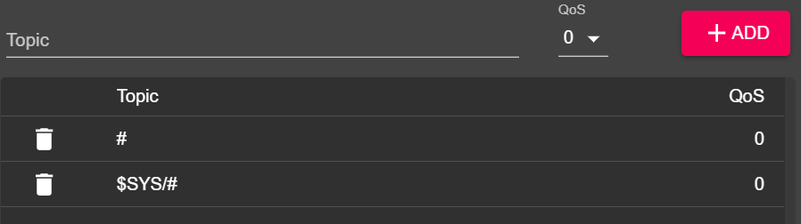
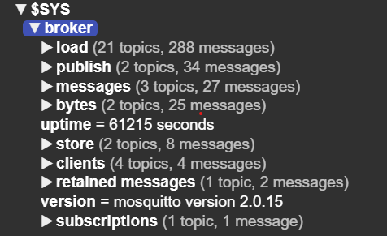
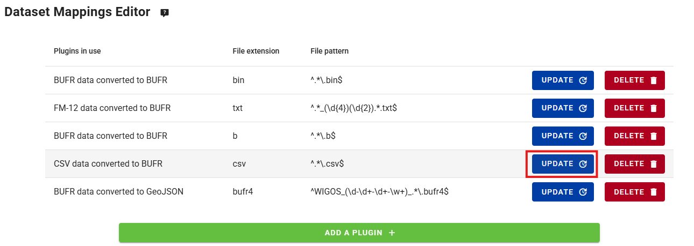
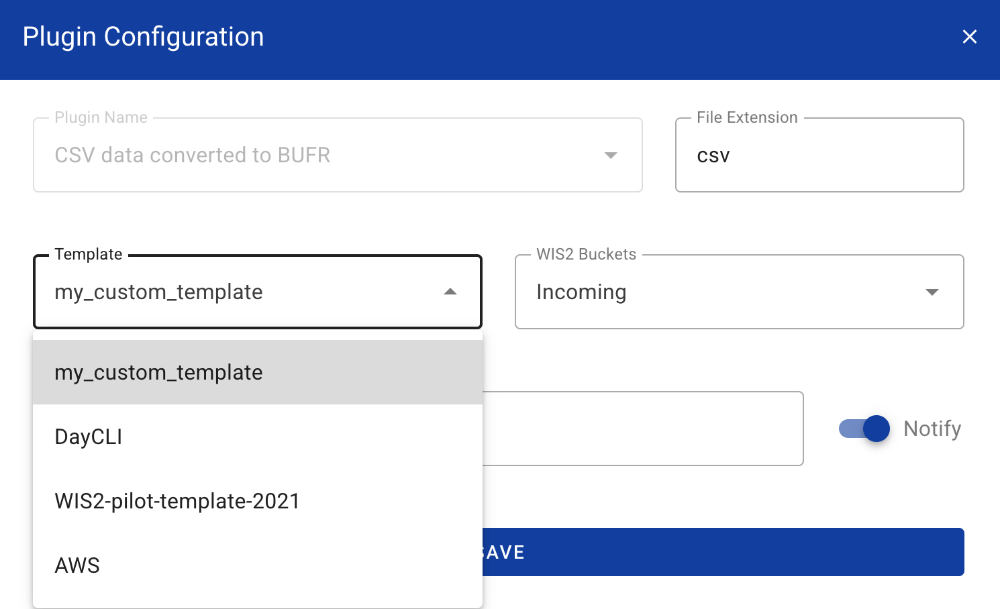

WIS2 in a box Schulung
WIS2 in a box (wis2box) ist eine freie und Open-Source (FOSS) Referenzimplementierung eines WMO WIS2-Knotens. Das Projekt bietet ein Plug-and-Play-Toolset zum Erfassen, Verarbeiten und Veröffentlichen von Wetter-/Klima-/Wasserdaten unter Verwendung von standardbasierten Ansätzen in Übereinstimmung mit den WIS2-Prinzipien. wis2box bietet auch Zugang zu allen Daten im WIS2-Netzwerk. wis2box ist so konzipiert, dass es für Datenanbieter eine niedrige Einstiegshürde bietet und Infrastruktur und Dienste zur Datenentdeckung, -zugriff und -visualisierung ermöglicht.
Diese Schulung bietet schrittweise Erklärungen zu verschiedenen Aspekten des wis2box-Projekts sowie eine Reihe von Übungen, um Ihnen zu helfen, Daten von WIS2 zu veröffentlichen und herunterzuladen. Die Schulung wird in Form von Übersichtspräsentationen sowie praktischen Übungen angeboten.
Teilnehmer werden in der Lage sein, mit Testdaten und Metadaten zu arbeiten sowie ihre eigenen Daten und Metadaten zu integrieren.
Diese Schulung deckt eine breite Palette von Themen ab (Installation/Konfiguration, Veröffentlichung/Download von Daten usw.).
Ziele und Lernergebnisse
Die Ziele dieser Schulung sind, sich mit den folgenden Themen vertraut zu machen:
- Kernkonzepte und Komponenten der WIS2-Architektur
- Daten- und Metadatenformate, die in WIS2 für Entdeckung und Zugriff verwendet werden
- wis2box-Architektur und -Umgebung
- Kernfunktionen von wis2box:
- Metadatenmanagement
- Datenerfassung und -umwandlung in das BUFR-Format
- MQTT-Broker für die Veröffentlichung von WIS2-Nachrichten
- HTTP-Endpunkt für den Daten-Download
- API-Endpunkt für den programmatischen Zugriff auf Daten
Navigation
Die Navigation auf der linken Seite bietet ein Inhaltsverzeichnis für die gesamte Schulung.
Die Navigation auf der rechten Seite bietet ein Inhaltsverzeichnis für eine spezifische Seite.
Voraussetzungen
Wissen
- Grundlegende Linux-Befehle (siehe das cheatsheet)
- Grundkenntnisse über Netzwerk- und Internetprotokolle
Software
Diese Schulung erfordert die folgenden Werkzeuge:
- Eine Instanz mit Ubuntu OS (wird von WMO-Trainern während lokaler Schulungssitzungen bereitgestellt) siehe Zugriff auf Ihre Studenten-VM
- SSH-Client für den Zugriff auf Ihre Instanz
- MQTT Explorer auf Ihrem lokalen Rechner
- SCP- und SFTP-Client zum Kopieren von Dateien von Ihrem lokalen Rechner
Konventionen
Question
Ein Abschnitt, der so markiert ist, lädt Sie ein, eine Frage zu beantworten.
Außerdem werden Sie Tipps und Hinweise innerhalb des Textes bemerken:
Tip
Tipps geben Hilfe, wie man Aufgaben am besten bewältigt.
Note
Hinweise bieten zusätzliche Informationen zum behandelten Thema sowie dazu, wie Aufgaben am besten bewältigt werden.
Beispiele werden wie folgt angezeigt:
Konfiguration
1 2 3 4 | |
Schnipsel, die in einem Terminal/Konsole eingegeben werden müssen, werden angezeigt als:
echo 'Hello world'
Container-Namen (laufende Images) sind in Fett gekennzeichnet.
Schulungsort und -materialien
Die Schulungsinhalte, das Wiki und der Issue-Tracker werden auf GitHub verwaltet unter https://github.com/World-Meteorological-Organization/wis2box-training.
Drucken des Materials
Diese Schulung kann als PDF exportiert werden. Um dieses Schulungsmaterial zu speichern oder zu drucken, gehen Sie zur Druckseite und wählen Datei > Drucken > Als PDF speichern.
Übungsmaterialien
Übungsmaterialien können von der exercise-materials.zip Zip-Datei heruntergeladen werden.
Unterstützung
Für Probleme/Bugs/Vorschläge oder Verbesserungen/Beiträge zu dieser Schulung nutzen Sie bitte den GitHub-Issue-Tracker.
Alle wis2box-Bugs, Verbesserungen und Probleme können auf GitHub gemeldet werden.
Für zusätzliche Unterstützung oder Fragen kontaktieren Sie bitte wis2-support@wmo.int.
Wie immer kann die Kern-Dokumentation von wis2box immer unter https://docs.wis2box.wis.wmo.int gefunden werden.
Beiträge sind immer ermutigt und willkommen!
Praktische Sitzungen
Verbindung zu WIS2 über MQTT
Lernergebnisse
Am Ende dieser praktischen Sitzung werden Sie in der Lage sein:
- eine Verbindung zum WIS2 Global Broker mit MQTT Explorer herzustellen
- die WIS2-Themenstruktur zu überprüfen
- die Struktur der WIS2-Benachrichtigungsnachrichten zu überprüfen
Einführung
WIS2 verwendet das MQTT-Protokoll, um die Verfügbarkeit von Wetter-/Klima-/Wasserdaten zu bewerben. Der WIS2 Global Broker abonniert alle WIS2 Nodes im Netzwerk und veröffentlicht die empfangenen Nachrichten erneut. Der Global Cache abonniert den Global Broker, lädt die Daten in der Nachricht herunter und veröffentlicht dann die Nachricht im cache Thema mit einer neuen URL. Der Global Discovery Catalogue veröffentlicht Entdeckungsmetadaten vom Broker und bietet eine Such-API.
Dies ist ein Beispiel für die Struktur einer WIS2-Benachrichtigungsnachricht für eine Nachricht, die im Thema origin/a/wis2/br-inmet/data/core/weather/surface-based-observations/synop empfangen wurde:
{
"id": "59f9b013-c4b3-410a-a52d-fff18f3f1b47",
"type": "Feature",
"version": "v04",
"geometry": {
"coordinates": [
-38.69389,
-17.96472,
60
],
"type": "Point"
},
"properties": {
"data_id": "br-inmet/data/core/weather/surface-based-observations/synop/WIGOS_0-76-2-2900801000W83499_20240815T060000",
"datetime": "2024-08-15T06:00:00Z",
"pubtime": "2024-08-15T09:52:02Z",
"integrity": {
"method": "sha512",
"value": "TBuWycx/G0lIiTo47eFPBViGutxcIyk7eikppAKPc4aHgOmTIS5Wb9+0v3awMOyCgwpFhTruRRCVReMQMp5kYw=="
},
"content": {
"encoding": "base64",
"value": "QlVGUgAA+gQAABYAACsAAAAAAAIAHAAH6AgPBgAAAAALAAABgMGWx1AAAM0ABOIAAAODM0OTkAAAAAAAAAAAAAAKb5oKEpJ6YkJ6mAAAAAAAAAAAAAAAAv0QeYA29WQa87ZhH4CQP//z+P//BD////+ASznXuUb///8MgAS3/////8X///e+AP////AB/+R/yf////////////////////6/1/79H/3///gEt////////4BLP6QAf/+/pAB//4H0YJ/YeAh/f2///7TH/////9+j//f///////////////////v0f//////////////////////wNzc3Nw==",
"size": 250
},
"wigos_station_identifier": "0-76-2-2900801000W83499"
},
"links": [
{
"rel": "canonical",
"type": "application/bufr",
"href": "http://wis2bra.inmet.gov.br/data/2024-08-15/wis/br-inmet/data/core/weather/surface-based-observations/synop/WIGOS_0-76-2-2900801000W83499_20240815T060000.bufr4",
"length": 250
}
]
}
In dieser praktischen Sitzung lernen Sie, wie Sie das Tool MQTT Explorer verwenden, um eine MQTT-Clientverbindung zu einem WIS2 Global Broker einzurichten und WIS2-Benachrichtigungsnachrichten anzeigen zu können.
MQTT Explorer ist ein nützliches Tool, um die Themenstruktur eines gegebenen MQTT-Brokers zu durchsuchen und die veröffentlichten Daten zu überprüfen.
Beachten Sie, dass MQTT hauptsächlich für die "Maschine-zu-Maschine"-Kommunikation verwendet wird; das bedeutet, dass normalerweise ein Client die Nachrichten automatisch verarbeitet, sobald sie empfangen werden. Um programmatisch mit MQTT zu arbeiten (zum Beispiel in Python), können Sie MQTT-Client-Bibliotheken wie paho-mqtt verwenden, um eine Verbindung zu einem MQTT-Broker herzustellen und eingehende Nachrichten zu verarbeiten. Es gibt zahlreiche MQTT-Client- und Server-Software, abhängig von Ihren Anforderungen und Ihrem technischen Umfeld.
Verwendung von MQTT Explorer zur Verbindung mit dem Global Broker
Um Nachrichten, die von einem WIS2 Global Broker veröffentlicht wurden, anzeigen zu können, können Sie "MQTT Explorer" verwenden, das von der MQTT Explorer-Website heruntergeladen werden kann.
Öffnen Sie MQTT Explorer und fügen Sie eine neue Verbindung zum Global Broker hinzu, der von MeteoFrance gehostet wird, mit den folgenden Details:
- host: globalbroker.meteo.fr
- port: 8883
- username: everyone
- password: everyone

Klicken Sie auf die Schaltfläche 'ADVANCED', entfernen Sie die vorkonfigurierten Themen und fügen Sie die folgenden Themen zum Abonnieren hinzu:
origin/a/wis2/#

Note
Bei der Einrichtung von MQTT-Abonnements können Sie die folgenden Platzhalter verwenden:
- Einzelniveau (+): Ein Platzhalter auf Einzelniveau ersetzt eine Themenstufe
- Mehrfachniveau (#): Ein Platzhalter auf Mehrfachniveau ersetzt mehrere Themenstufen
In diesem Fall wird origin/a/wis2/# alle Themen unter dem Thema origin/a/wis2 abonnieren.
Klicken Sie auf 'BACK', dann auf 'SAVE', um Ihre Verbindungs- und Abonnementdetails zu speichern. Dann klicken Sie auf 'CONNECT':
Nachrichten sollten in Ihrer MQTT Explorer-Sitzung wie folgt erscheinen:

Sie sind jetzt bereit, die WIS2-Themen und Nachrichtenstrukturen zu erkunden.
Übung 1: Überprüfung der WIS2-Themenstruktur
Verwenden Sie MQTT, um die Themenstruktur unter den origin Themen zu durchsuchen.
Question
Wie können wir das WIS-Zentrum unterscheiden, das die Daten veröffentlicht hat?
Klicken Sie, um die Antwort zu enthüllen
Sie können im linken Fenster in MQTT Explorer auf die Themenstruktur klicken, um sie zu erweitern.
Wir können das WIS-Zentrum, das die Daten veröffentlicht hat, erkennen, indem wir auf die vierte Ebene der Themenstruktur schauen. Zum Beispiel sagt uns das folgende Thema:
origin/a/wis2/br-inmet/data/core/weather/surface-based-observations/synop
dass die Daten von einem WIS-Zentrum mit der Zentrum-ID br-inmet veröffentlicht wurden, das die Zentrum-ID für das Instituto Nacional de Meteorologia - INMET, Brasilien, ist.
Question
Wie können wir zwischen Nachrichten unterscheiden, die von WIS-Zentren veröffentlicht wurden, die ein GTS-to-WIS2-Gateway hosten, und Nachrichten, die von WIS-Zentren veröffentlicht wurden, die einen WIS2-Knoten hosten?
Klicken Sie, um die Antwort zu enthüllen
Wir können Nachrichten, die von einem GTS-to-WIS2-Gateway kommen, anhand der Zentrum-ID in der Themenstruktur unterscheiden. Zum Beispiel sagt uns das folgende Thema:
origin/a/wis2/de-dwd-gts-to-wis2/data/core/I/S/A/I/01/sbbr
dass die Daten vom GTS-to-WIS2-Gateway veröffentlicht wurden, das vom Deutschen Wetterdienst (DWD) in Deutschland gehostet wird. Das GTS-to-WIS2-Gateway ist eine spezielle Art von Datenveröffentlicher, der Daten vom Globalen Telekommunikationssystem (GTS) zu WIS2 veröffentlicht. Die Themenstruktur besteht aus den TTAAii CCCC-Headern für die GTS-Nachrichten.
Übung 2: Überprüfung der WIS2-Nachrichtenstruktur
Trennen Sie die Verbindung von MQTT Explorer und aktualisieren Sie die 'Advanced'-Abschnitte, um das Abonnement auf die folgenden zu ändern:
origin/a/wis2/+/data/core/weather/surface-based-observations/synopcache/a/wis2/+/data/core/weather/surface-based-observations/synop

Note
Der + Platzhalter wird verwendet, um alle WIS-Zentren zu abonnieren.
Stellen Sie die Verbindung zum Global Broker wieder her und warten Sie, bis Nachrichten erscheinen.
Sie können den Inhalt der WIS2-Nachricht im Abschnitt "Value" auf der rechten Seite anzeigen. Versuchen Sie, die Themenstruktur zu erweitern, um die verschiedenen Ebenen der Nachricht zu sehen, bis Sie die letzte Ebene erreichen und den Nachrichteninhalt einer der Nachrichten überprüfen.
Question
Wie können wir den Zeitstempel identifizieren, zu dem die Daten veröffentlicht wurden? Und wie können wir den Zeitstempel identifizieren, zu dem die Daten gesammelt wurden?
Klicken Sie, um die Antwort zu enthüllen
Der Zeitstempel, zu dem die Daten veröffentlicht wurden, befindet sich im Abschnitt properties der Nachricht mit dem Schlüssel pubtime.
Der Zeitstempel, zu dem die Daten gesammelt wurden, befindet sich im Abschnitt properties der Nachricht mit dem Schlüssel datetime.

Question
Wie können wir die Daten von der in der Nachricht angegebenen URL herunterladen?
Klicken Sie, um die Antwort zu enthüllen
Die URL befindet sich im Abschnitt links mit rel="canonical" und wird durch den Schlüssel href definiert.
Sie können die URL kopieren und in einen Webbrowser einfügen, um die Daten herunterzuladen.
Übung 3: Überprüfung des Unterschieds zwischen 'origin' und 'cache' Themen
Stellen Sie sicher, dass Sie weiterhin mit dem Global Broker verbunden sind, indem Sie die Themenabonnements origin/a/wis2/+/data/core/weather/surface-based-observations/synop und cache/a/wis2/+/data/core/weather/surface-based-observations/synop verwenden, wie in Übung 2 beschrieben.
Versuchen Sie, eine Nachricht für dieselbe Zentrum-ID zu identifizieren, die sowohl auf den origin als auch auf den cache Themen veröffentlicht wurde.
Question
Was ist der Unterschied zwischen den Nachrichten, die auf den origin und cache Themen veröffentlicht wurden?
Klicken Sie, um die Antwort zu enthüllen
Die Nachrichten, die auf den origin Themen veröffentlicht wurden, sind die Originalnachrichten, die der Global Broker von den WIS2 Nodes im Netzwerk erneut veröffentlicht.
Die Nachrichten, die auf den cache Themen veröffentlicht wurden, sind die Nachrichten, für die Daten vom Global Cache heruntergeladen wurden. Wenn Sie den Inhalt der Nachricht aus dem Thema, das mit cache beginnt, überprüfen, werden Sie sehen, dass der 'canonical' Link auf eine neue URL aktualisiert wurde.
Es gibt mehrere Global Caches im WIS2-Netzwerk, daher erhalten Sie eine Nachricht von jedem Global Cache, der die Nachricht heruntergeladen hat.
Der Global Cache wird nur Nachrichten herunterladen und erneut veröffentlichen, die auf der ../data/core/... Themenhierarchie veröffentlicht wurden.
Schlussfolgerung
Herzlichen Glückwunsch!
In dieser praktischen Sitzung haben Sie gelernt:
- wie man WIS2 Global Broker-Dienste mit MQTT Explorer abonniert
- die WIS2-Themenstruktur
- die WIS2-Benachrichtigungsnachrichtenstruktur
- den Unterschied zwischen Kern- und empfohlenen Daten
- die Themenstruktur, die vom GTS-to-WIS2-Gateway verwendet wird
- den Unterschied zwischen Nachrichten des Global Brokers, die auf den
originundcacheThemen veröffentlicht wurden
Zugriff auf Ihre Studenten-VM
Lernergebnisse
Am Ende dieser praktischen Sitzung werden Sie in der Lage sein:
- Zugriff auf Ihre Studenten-VM über SSH und WinSCP
- Überprüfung der erforderlichen Software für die praktischen Übungen
- Überprüfung des Zugriffs auf Übungsmaterialien für dieses Training auf Ihrer lokalen Studenten-VM
Einführung
Im Rahmen von lokal durchgeführten wis2box-Schulungen können Sie auf Ihre persönliche Studenten-VM im lokalen Schulungsnetzwerk namens "WIS2-training" zugreifen.
Ihre Studenten-VM hat die folgende Software vorinstalliert:
- Ubuntu 22.0.4.3 LTS ubuntu-22.04.3-live-server-amd64.iso
- Python 3.10.12
- Docker 24.0.6
- Docker Compose 2.21.0
- Texteditoren: vim, nano
Note
Wenn Sie dieses Training außerhalb einer lokalen Schulungssitzung durchführen möchten, können Sie Ihre eigene Instanz über einen beliebigen Cloud-Anbieter bereitstellen, zum Beispiel:
- GCP (Google Cloud Platform) VM-Instanz
e2-medium - AWS (Amazon Web Services) ec2-Instanz
t3a.medium - Azure (Microsoft) Azure Virtual Machine
standard_b2s
Wählen Sie Ubuntu Server 22.0.4 LTS als Betriebssystem.
Nachdem Sie Ihre VM erstellt haben, stellen Sie sicher, dass Python, Docker und Docker Compose installiert sind, wie unter wis2box-software-dependencies beschrieben.
Das Release-Archiv für wis2box, das in diesem Training verwendet wird, kann wie folgt heruntergeladen werden:
wget https://github.com/World-Meteorological-Organization/wis2box-release/releases/download/1.0.0/wis2box-setup.zip
unzip wis2box-setup.zip
Das neueste 'wis2box-setup'-Archiv finden Sie immer unter https://github.com/World-Meteorological-Organization/wis2box/releases.
Das Übungsmaterial, das in diesem Training verwendet wird, kann wie folgt heruntergeladen werden:
wget https://training.wis2box.wis.wmo.int/exercise-materials.zip
unzip exercise-materials.zip
Die folgenden zusätzlichen Python-Pakete sind erforderlich, um die Übungsmaterialien auszuführen:
pip3 install minio
pip3 install pywiscat==0.2.2
Wenn Sie die Studenten-VM verwenden, die während der lokalen WIS2-Schulungen bereitgestellt wird, ist die erforderliche Software bereits installiert.
Verbinden Sie sich mit Ihrer Studenten-VM im lokalen Schulungsnetzwerk
Verbinden Sie Ihren PC mit dem lokalen WLAN, das während der WIS2-Schulung im Raum ausgestrahlt wird, gemäß den Anweisungen des Trainers.
Verwenden Sie einen SSH-Client, um sich mit Ihrer Studenten-VM zu verbinden, indem Sie folgende Daten verwenden:
- Host: (während der Präsenzschulung bereitgestellt)
- Port: 22
- Benutzername: (während der Präsenzschulung bereitgestellt)
- Passwort: (während der Präsenzschulung bereitgestellt)
Tip
Kontaktieren Sie einen Trainer, wenn Sie sich bezüglich des Hostnamens/Benutzernamens unsicher sind oder Probleme beim Verbinden haben.
Sobald Sie verbunden sind, ändern Sie bitte Ihr Passwort, um sicherzustellen, dass andere keinen Zugriff auf Ihre VM haben:
limper@student-vm:~$ passwd
Passwort ändern für testuser.
Aktuelles Passwort:
Neues Passwort:
Neues Passwort wiederholen:
passwd: Passwort erfolgreich aktualisiert
Überprüfen Sie die Softwareversionen
Um wis2box ausführen zu können, sollten Python, Docker und Docker Compose auf der Studenten-VM vorinstalliert sein.
Überprüfen Sie die Python-Version:
python3 --version
Python 3.10.12
Überprüfen Sie die Docker-Version:
docker --version
Docker version 24.0.6, build ed223bc
Überprüfen Sie die Docker Compose-Version:
docker compose version
Docker Compose version v2.21.0
Um sicherzustellen, dass Ihr Benutzer Docker-Befehle ausführen kann, wurde Ihr Benutzer zur docker-Gruppe hinzugefügt.
Um zu testen, dass Ihr Benutzer docker hello-world ausführen kann, führen Sie den folgenden Befehl aus:
docker run hello-world
Dies sollte das hello-world-Image herunterladen und einen Container ausführen, der eine Nachricht ausgibt.
Überprüfen Sie, ob Sie Folgendes in der Ausgabe sehen:
...
Hello from Docker!
This message shows that your installation appears to be working correctly.
...
Überprüfen Sie die Übungsmaterialien
Überprüfen Sie den Inhalt Ihres Home-Verzeichnisses; dies sind die Materialien, die als Teil des Trainings und der praktischen Sitzungen verwendet werden.
ls ~/
exercise-materials wis2box
Wenn Sie WinSCP auf Ihrem lokalen PC installiert haben, können Sie es verwenden, um sich mit Ihrer Studenten-VM zu verbinden und den Inhalt Ihres Home-Verzeichnisses zu inspizieren sowie Dateien zwischen Ihrer VM und Ihrem lokalen PC herunterzuladen oder hochzuladen.
WinSCP ist nicht erforderlich für das Training, kann jedoch nützlich sein, wenn Sie Dateien auf Ihrer VM mit einem Texteditor auf Ihrem lokalen PC bearbeiten möchten.
So können Sie sich mit WinSCP mit Ihrer Studenten-VM verbinden:
Öffnen Sie WinSCP und klicken Sie auf "Neue Seite". Sie können eine neue SCP-Verbindung zu Ihrer VM wie folgt erstellen:

Klicken Sie auf 'Speichern' und dann auf 'Anmelden', um sich mit Ihrer VM zu verbinden.
Und Sie sollten in der Lage sein, den folgenden Inhalt zu sehen:

Schlussfolgerung
Herzlichen Glückwunsch!
In dieser praktischen Sitzung haben Sie gelernt, wie Sie:
- Zugriff auf Ihre Studenten-VM über SSH und WinSCP
- Überprüfung der erforderlichen Software für die praktischen Übungen
- Überprüfung des Zugriffs auf Übungsmaterialien für dieses Training auf Ihrer lokalen Studenten-VM
Initialisierung von wis2box
Lernergebnisse
Am Ende dieser praktischen Sitzung werden Sie in der Lage sein:
- das Skript
wis2box-create-config.pyauszuführen, um die anfängliche Konfiguration zu erstellen - wis2box zu starten und den Status seiner Komponenten zu überprüfen
- den Inhalt der wis2box-api einzusehen
- auf die wis2box-webapp zuzugreifen
- eine Verbindung zum lokalen wis2box-broker mit MQTT Explorer herzustellen
Note
Die aktuellen Schulungsmaterialien basieren auf wis2box-release 1.0.0.
Siehe accessing-your-student-vm für Anweisungen zum Herunterladen und Installieren des wis2box-Software-Stacks, wenn Sie diese Schulung außerhalb einer lokalen Schulungssitzung durchführen.
Vorbereitung
Melden Sie sich mit Ihrem Benutzernamen und Passwort an Ihrem zugewiesenen VM an und stellen Sie sicher, dass Sie sich im Verzeichnis wis2box befinden:
cd ~/wis2box
Erstellen der anfänglichen Konfiguration
Die anfängliche Konfiguration für die wis2box erfordert:
- eine Umgebungsdatei
wis2box.env, die die Konfigurationsparameter enthält - ein Verzeichnis auf dem Host-Computer, das zwischen dem Host-Computer und den wis2box-Containern geteilt wird, definiert durch die Umgebungsvariable
WIS2BOX_HOST_DATADIR
Das Skript wis2box-create-config.py kann verwendet werden, um die anfängliche Konfiguration Ihrer wis2box zu erstellen.
Es wird Ihnen eine Reihe von Fragen stellen, um Ihre Konfiguration einzurichten.
Sie können die Konfigurationsdateien überprüfen und aktualisieren, nachdem das Skript abgeschlossen ist.
Führen Sie das Skript wie folgt aus:
python3 wis2box-create-config.py
wis2box-host-data Verzeichnis
Das Skript wird Sie bitten, das Verzeichnis für die Umgebungsvariable WIS2BOX_HOST_DATADIR einzugeben.
Beachten Sie, dass Sie den vollständigen Pfad zu diesem Verzeichnis angeben müssen.
Zum Beispiel, wenn Ihr Benutzername username ist, ist der vollständige Pfad zum Verzeichnis /home/username/wis2box-data:
username@student-vm-username:~/wis2box$ python3 wis2box-create-config.py
Bitte geben Sie das Verzeichnis an, das für WIS2BOX_HOST_DATADIR verwendet werden soll:
/home/username/wis2box-data
Das Verzeichnis, das für WIS2BOX_HOST_DATADIR verwendet wird, wird auf folgendes festgelegt:
/home/username/wis2box-data
Ist das korrekt? (y/n/exit)
y
Das Verzeichnis /home/username/wis2box-data wurde erstellt.
wis2box URL
Als Nächstes werden Sie gebeten, die URL für Ihre wis2box einzugeben. Dies ist die URL, die verwendet wird, um auf die wis2box-Webanwendung, API und UI zuzugreifen.
Bitte verwenden Sie http://<your-hostname-or-ip> als URL.
Bitte geben Sie die URL der wis2box ein:
Für lokale Tests ist die URL http://localhost
Um den Fernzugriff zu ermöglichen, sollte die URL auf die öffentliche IP-Adresse oder den Domainnamen des Servers zeigen, der die wis2box hostet.
http://username.wis2.training
Die URL der wis2box wird auf folgendes festgelegt:
http://username.wis2.training
Ist das korrekt? (y/n/exit)
WEBAPP, STORAGE und BROKER Passwörter
Sie können die Option der zufälligen Passwortgenerierung verwenden, wenn Sie nach WIS2BOX_WEBAPP_PASSWORD, WIS2BOX_STORAGE_PASSWORD, WIS2BOX_BROKER_PASSWORD gefragt werden und Ihr eigenes definieren.
Machen Sie sich keine Sorgen, sich diese Passwörter zu merken, sie werden in der Datei wis2box.env in Ihrem wis2box-Verzeichnis gespeichert.
Überprüfung wis2box.env
Nachdem das Skript abgeschlossen ist, überprüfen Sie den Inhalt der Datei wis2box.env in Ihrem aktuellen Verzeichnis:
cat ~/wis2box/wis2box.env
Oder überprüfen Sie den Inhalt der Datei über WinSCP.
Question
Was ist der Wert von WISBOX_BASEMAP_URL in der Datei wis2box.env?
Klicken Sie, um die Antwort zu sehen
Der Standardwert für WIS2BOX_BASEMAP_URL ist https://{s}.tile.openstreetmap.org/{z}/{x}/{y}.png.
Diese URL bezieht sich auf den OpenStreetMap-Tile-Server. Wenn Sie einen anderen Kartenanbieter verwenden möchten, können Sie diese URL ändern, um auf einen anderen Tile-Server zu zeigen.
Question
Was ist der Wert der Umgebungsvariable WIS2BOX_STORAGE_DATA_RETENTION_DAYS in der Datei wis2box.env?
Klicken Sie, um die Antwort zu sehen
Der Standardwert für WIS2BOX_STORAGE_DATA_RETENTION_DAYS beträgt 30 Tage. Sie können diesen Wert ändern, wenn Sie eine andere Anzahl von Tagen wünschen.
Der wis2box-management-Container führt täglich einen Cronjob aus, um Daten, die älter als die durch WIS2BOX_STORAGE_DATA_RETENTION_DAYS definierte Anzahl von Tagen sind, aus dem wis2box-public-Bucket und dem API-Backend zu entfernen:
0 0 * * * su wis2box -c "wis2box data clean --days=$WIS2BOX_STORAGE_DATA_RETENTION_DAYS"
Note
Die Datei wis2box.env enthält Umgebungsvariablen, die die Konfiguration Ihrer wis2box definieren. Für weitere Informationen konsultieren Sie die wis2box-Dokumentation.
Bearbeiten Sie die Datei wis2box.env nicht, es sei denn, Sie sind sicher über die Änderungen, die Sie vornehmen. Falsche Änderungen können dazu führen, dass Ihre wis2box nicht mehr funktioniert.
Teilen Sie den Inhalt Ihrer wis2box.env-Datei nicht mit anderen, da sie sensible Informationen wie Passwörter enthält.
Starten von wis2box
Stellen Sie sicher, dass Sie sich im Verzeichnis befinden, das die Definitionsdateien des wis2box-Software-Stacks enthält:
cd ~/wis2box
Starten Sie wis2box mit dem folgenden Befehl:
python3 wis2box-ctl.py start
Wenn Sie diesen Befehl zum ersten Mal ausführen, sehen Sie die folgende Ausgabe:
Keine docker-compose.images-*.yml Dateien gefunden, eine wird erstellt
Aktuelle Version=Undefined, neueste Version=1.0.0
Möchten Sie aktualisieren? (y/n/exit)
Wählen Sie y und das Skript wird die Datei docker-compose.images-1.0.0.yml erstellen, die erforderlichen Docker-Images herunterladen und die Dienste starten.
Das Herunterladen der Bilder kann je nach Ihrer Internetgeschwindigkeit einige Zeit in Anspruch nehmen. Dieser Schritt ist nur beim ersten Start von wis2box erforderlich.
Überprüfen Sie den Status mit dem folgenden Befehl:
python3 wis2box-ctl.py status
Wiederholen Sie diesen Befehl, bis alle Dienste aktiv und laufend sind.
wis2box und Docker
wis2box wird als eine Reihe von Docker-Containern ausgeführt, die von docker-compose verwaltet werden.
Die Dienste sind in den verschiedenen docker-compose*.yml definiert, die im Verzeichnis ~/wis2box/ zu finden sind.
Das Python-Skript wis2box-ctl.py wird verwendet, um die zugrundeliegenden Docker Compose-Befehle auszuführen, die die wis2box-Dienste steuern.
Sie müssen die Details der Docker-Container nicht kennen, um den wis2box-Software-Stack auszuführen, aber Sie können die docker-compose*.yml-Dateien und Dateien inspizieren, um zu sehen, wie die Dienste definiert sind. Wenn Sie mehr über Docker erfahren möchten, finden Sie weitere Informationen in der Docker-Dokumentation.
Um sich beim wis2box-management-Container anzumelden, verwenden Sie den folgenden Befehl:
python3 wis2box-ctl.py login
Im wis2box-management-Container können Sie verschiedene Befehle ausführen, um Ihre wis2box zu verwalten, wie zum Beispiel:
wis2box auth add-token --path processes/wis2box: um ein Autorisierungstoken für den Endpunktprocesses/wis2boxzu erstellenwis2box data clean --days=<number-of-days>: um Daten, die älter als eine bestimmte Anzahl von Tagen sind, aus demwis2box-public-Bucket zu bereinigen
Um den Container zu verlassen und zum Host-Computer zurückzukehren, verwenden Sie den folgenden Befehl:
exit
Führen Sie den folgenden Befehl aus, um die Docker-Container zu sehen, die auf Ihrem Host-Computer laufen:
docker ps
Sie sollten die folgenden Container laufen sehen:
- wis2box-management
- wis2box-api
- wis2box-minio
- wis2box-webapp
- wis2box-auth
- wis2box-ui
- wis2downloader
- elasticsearch
- elasticsearch-exporter
- nginx
- mosquitto
- prometheus
- grafana
- loki
Diese Container sind Teil des wis2box-Software-Stacks und bieten die verschiedenen Dienste, die erforderlich sind, um die wis2box zu betreiben.
Führen Sie den folgenden Befehl aus, um die Docker-Volumes auf Ihrem Host-Computer zu sehen:
docker volume ls
Sie sollten die folgenden Volumes sehen:
- wis2box_project_auth-data
- wis2box_project_es-data
- wis2box_project_htpasswd
- wis2box_project_minio-data
- wis2box_project_prometheus-data
- wis2box_project_loki-data
- wis2box_project_mosquitto-config
Sowie einige anonyme Volumes, die von den verschiedenen Containern verwendet werden.
Die Volumes, die mit wis2box_project_ beginnen, werden verwendet, um persistente Daten für die verschiedenen Dienste im wis2box-Software-Stack zu speichern.
wis2box API
Die wis2box enthält eine API (Application Programming Interface), die Datenzugriff und Prozesse für interaktive Visualisierung, Datentransformation und Veröffentlichung bietet.
Öffnen Sie einen neuen Tab und navigieren Sie zur Seite http://YOUR-HOST/oapi.

Dies ist die Startseite der wis2box API (betrieben über den wis2box-api-Container).
Question
Welche Sammlungen sind derzeit verfügbar?
Klicken Sie, um die Antwort zu sehen
Um die derzeit über die API verfügbaren Sammlungen einzusehen, klicken Sie auf View the collections in this service:

Die folgenden Sammlungen sind derzeit verfügbar:
- Stationen
- Datenbenachrichtigungen
- Entdeckungsmetadaten
Question
Wie viele Datenbenachrichtigungen wurden veröffentlicht?
Klicken Sie, um die Antwort zu sehen
Klicken Sie auf "Datenbenachrichtigungen", dann klicken Sie auf Browse through the items of "Data Notifications".
Sie werden feststellen, dass die Seite "Keine Elemente" sagt, da noch keine Datenbenachrichtigungen veröffentlicht wurden.
wis2box webapp
Öffnen Sie einen Webbrowser und besuchen Sie die Seite http://YOUR-HOST/wis2box-webapp.
Es erscheint ein Pop-up, das nach Ihrem Benutzernamen und Passwort fragt. Verwenden Sie den Standardbenutzernamen wis2box-user und das WIS2BOX_WEBAPP_PASSWORD, das in der Datei wis2box.env definiert ist, und klicken Sie auf "Anmelden":
Note
Überprüfen Sie Ihre wis2box.env auf den Wert Ihres WIS2BOX_WEBAPP_PASSWORD. Sie können den folgenden Befehl verwenden, um den Wert dieser Umgebungsvariablen zu überprüfen:
cat ~/wis2box/wis2box.env | grep WIS2BOX_WEBAPP_PASSWORD
Nachdem Sie sich angemeldet haben, bewegen Sie Ihre Maus zum Menü auf der linken Seite, um die verfügbaren Optionen in der wis2box-Webanwendung zu sehen:

Dies ist die wis2box-Webanwendung, die es Ihnen ermöglicht, mit Ihrer wis2box zu interagieren:
- Erstellen und Verwalten von Datensätzen
- Aktualisieren/Überprüfen Ihrer Stationsmetadaten
- Hochladen manueller Beobachtungen mit dem FM-12-Synop-Formular
- Überwachen von Benachrichtigungen, die auf Ihrem wis2box-broker veröffentlicht wurden
Wir werden diese Webanwendung in einer späteren Sitzung verwenden.
wis2box-broker
Öffnen Sie den MQTT Explorer auf Ihrem Computer und bereiten Sie eine neue Verbindung vor, um sich mit Ihrem Broker (betrieben über den wis2box-broker-Container) zu verbinden.
Klicken Sie auf +, um eine neue Verbindung hinzuzufügen:

Sie können auf die Schaltfläche 'ADVANCED' klicken und überprüfen, ob Sie Abonnements für die folgenden Themen haben:
#$SYS/#

Note
Das Thema # ist ein Platzhalter-Abonnement, das alle Themen abonniert, die auf dem Broker veröffentlicht werden.
Die unter dem Thema $SYS veröffentlichten Nachrichten sind Systemnachrichten, die vom Mosquitto-Dienst selbst veröffentlicht werden.
Verwenden Sie die folgenden Verbindungsdetails und ersetzen Sie den Wert von <your-host> durch Ihren Hostnamen und <WIS2BOX_BROKER_PASSWORD> durch den Wert aus Ihrer wis2box.env-Datei:
- Protokoll: mqtt://
- Host:
<your-host> - Port: 1883
- Benutzername: wis2box
- Passwort:
<WIS2BOX_BROKER_PASSWORD>
Note
Sie können Ihre wis2box.env überprüfen, um den Wert Ihres WIS2BOX_BROKER_PASSWORD zu sehen. Sie können den folgenden Befehl verwenden, um den Wert dieser Umgebungsvariablen zu überprüfen:
cat ~/wis2box/wis2box.env | grep WIS2BOX_BROKER_PASSWORD
Beachten Sie, dass dies Ihr interner Broker-Passwort ist, der Global Broker wird unterschiedliche (nur lesbare) Anmeldeinformationen verwenden, um sich bei Ihrem Broker zu abonnieren. Teilen Sie dieses Passwort niemals mit jemandem.
Stellen Sie sicher, dass Sie auf "SPEICHERN" klicken, um Ihre Verbindungsdetails zu speichern.
Klicken Sie dann auf "VERBINDEN", um sich mit Ihrem wis2box-broker zu verbinden.

Sobald Sie verbunden sind, überprüfen Sie, ob die internen Mosquitto-Statistiken von Ihrem Broker unter dem $SYS Thema veröffentlicht werden:

Halten Sie den MQTT Explorer geöffnet, da wir ihn verwenden werden, um die Nachrichten zu überwachen, die auf dem Broker veröffentlicht werden.
Schlussfolgerung
Herzlichen Glückwunsch!
In dieser praktischen Sitzung haben Sie gelernt, wie Sie:
- das Skript
wis2box-create-config.pyausführen, um die anfängliche Konfiguration zu erstellen - wis2box starten und den Status seiner Komponenten überprüfen
- auf die wis2box-webapp und wis2box-API in einem Browser zugreifen
- sich mit dem MQTT-Broker auf Ihrer Studenten-VM mit MQTT Explorer verbinden
Konfigurieren von Datensätzen in wis2box
Lernergebnisse
Am Ende dieser praktischen Sitzung werden Sie in der Lage sein:
- einen neuen Datensatz zu erstellen
- Entdeckungsmetadaten für einen Datensatz zu erstellen
- Datenzuordnungen für einen Datensatz zu konfigurieren
- eine WIS2-Benachrichtigung mit einem WCMP2-Datensatz zu veröffentlichen
- Ihren Datensatz zu aktualisieren und erneut zu veröffentlichen
Einführung
wis2box verwendet Datensätze, die mit Entdeckungsmetadaten und Datenzuordnungen verknüpft sind.
Entdeckungsmetadaten werden verwendet, um einen WCMP2 (WMO Core Metadata Profile 2) Datensatz zu erstellen, der über eine WIS2-Benachrichtigung veröffentlicht wird, die auf Ihrem wis2box-broker publiziert wird.
Die Datenzuordnungen werden verwendet, um ein Daten-Plugin mit Ihren Eingabedaten zu verknüpfen, sodass Ihre Daten vor der Veröffentlichung über die WIS2-Benachrichtigung transformiert werden können.
Diese Sitzung führt Sie durch das Erstellen eines neuen Datensatzes, das Erstellen von Entdeckungsmetadaten und das Konfigurieren von Datenzuordnungen. Sie werden Ihren Datensatz in der wis2box-api überprüfen und die WIS2-Benachrichtigung für Ihre Entdeckungsmetadaten überprüfen.
Vorbereitung
Verbinden Sie sich mit Ihrem Broker über MQTT Explorer.
Verwenden Sie anstelle Ihrer internen Broker-Anmeldeinformationen die öffentlichen Anmeldeinformationen everyone/everyone:

Note
Sie müssen niemals die Anmeldeinformationen Ihres internen Brokers mit externen Benutzern teilen. Der Benutzer 'everyone' ist ein öffentlicher Benutzer, um das Teilen von WIS2-Benachrichtigungen zu ermöglichen.
Die Anmeldeinformationen everyone/everyone haben nur Lesezugriff auf das Thema 'origin/a/wis2/#'. Dies ist das Thema, auf dem die WIS2-Benachrichtigungen veröffentlicht werden. Der Global Broker kann sich mit diesen öffentlichen Anmeldeinformationen anmelden, um die Benachrichtigungen zu erhalten.
Der Benutzer 'everyone' wird keine internen Themen sehen oder Nachrichten veröffentlichen können.
Öffnen Sie einen Browser und gehen Sie zu http://YOUR-HOST/wis2box-webapp. Stellen Sie sicher, dass Sie angemeldet sind und auf die Seite 'dataset editor' zugreifen können.
Sehen Sie sich den Abschnitt über Initializing wis2box an, wenn Sie sich daran erinnern müssen, wie Sie sich mit dem Broker verbinden oder auf die wis2box-webapp zugreifen können.
Erstellen eines Autorisierungstokens für processes/wis2box
Sie benötigen ein Autorisierungstoken für den Endpunkt 'processes/wis2box', um Ihren Datensatz zu veröffentlichen.
Um ein Autorisierungstoken zu erstellen, greifen Sie über SSH auf Ihre Trainings-VM zu und verwenden Sie die folgenden Befehle, um sich im wis2box-management-Container anzumelden:
cd ~/wis2box
python3 wis2box-ctl.py login
Führen Sie dann den folgenden Befehl aus, um ein zufällig generiertes Autorisierungstoken für den Endpunkt 'processes/wis2box' zu erstellen:
wis2box auth add-token --path processes/wis2box
Sie können auch ein Token mit einem spezifischen Wert erstellen, indem Sie das Token als Argument für den Befehl angeben:
wis2box auth add-token --path processes/wis2box MyS3cretToken
Stellen Sie sicher, dass Sie den Tokenwert kopieren und auf Ihrem lokalen Rechner speichern, da Sie ihn später benötigen werden.
Sobald Sie Ihr Token haben, können Sie den wis2box-management-Container verlassen:
exit
Erstellen eines neuen Datensatzes in der wis2box-webapp
Navigieren Sie auf der Seite 'dataset editor' in der wis2box-webapp Ihrer wis2box-Instanz zu http://YOUR-HOST/wis2box-webapp und wählen Sie 'dataset editor' aus dem Menü auf der linken Seite.
Auf der Seite 'dataset editor' klicken Sie unter dem Tab 'Datasets' auf "Create New ...":

Es erscheint ein Popup-Fenster, in dem Sie Folgendes angeben müssen:
- Centre ID : dies ist das Akronym der Agentur (in Kleinbuchstaben und ohne Leerzeichen), wie es vom WMO-Mitglied angegeben wurde, das das Datenzentrum identifiziert, das für die Veröffentlichung der Daten verantwortlich ist.
- Data Type: Der Datentyp, für den Sie Metadaten erstellen. Sie können zwischen der Verwendung einer vordefinierten Vorlage oder der Auswahl von 'other' wählen. Wenn 'other' ausgewählt wird, müssen weitere Felder manuell ausgefüllt werden.
Centre ID
Ihre Centre-ID sollte mit der TLD Ihres Landes beginnen, gefolgt von einem Bindestrich (-) und einem abgekürzten Namen Ihrer Organisation (zum Beispiel de-dwd). Die Centre-ID muss in Kleinbuchstaben sein und darf nur alphanumerische Zeichen verwenden. Die Dropdown-Liste zeigt alle derzeit auf WIS2 registrierten Centre-IDs sowie jede Centre-ID, die Sie bereits in wis2box erstellt haben.
Data Type Templates
Das Feld Data Type ermöglicht es Ihnen, aus einer Liste von Vorlagen in der wis2box-webapp dataset editor zu wählen. Eine Vorlage füllt das Formular mit vorgeschlagenen Standardwerten für den Datentyp aus. Dies umfasst vorgeschlagene Titel und Schlüsselwörter für die Metadaten und vorkonfigurierte Daten-Plugins. Das Thema wird auf das Standardthema für den Datentyp festgelegt.
Zu Trainingszwecken verwenden wir den Datentyp weather/surface-based-observations/synop, der Daten-Plugins enthält, die sicherstellen, dass die Daten vor der Veröffentlichung in das BUFR-Format umgewandelt werden.
Wenn Sie CAP-Warnungen mit wis2box veröffentlichen möchten, verwenden Sie die Vorlage weather/advisories-warnings. Diese Vorlage enthält ein Daten-Plugin, das überprüft, ob die Eingabedaten eine gültige CAP-Warnung sind, bevor sie veröffentlicht werden. Um CAP-Warnungen zu erstellen und über wis2box zu veröffentlichen, können Sie CAP Composer verwenden.
Bitte wählen Sie eine Centre-ID, die für Ihre Organisation geeignet ist.
Für Data Type wählen Sie weather/surface-based-observations/synop:

Klicken Sie auf continue to form, um fortzufahren. Ihnen wird nun das Dataset Editor Form präsentiert.
Da Sie den Datentyp weather/surface-based-observations/synop ausgewählt haben, wird das Formular mit einigen Anfangswerten für diesen Datentyp vorausgefüllt.
Erstellen von Entdeckungsmetadaten
Das Dataset Editor Form ermöglicht es Ihnen, die Entdeckungsmetadaten für Ihren Datensatz bereitzustellen, die der wis2box-management-Container verwenden wird, um einen WCMP2-Datensatz zu veröffentlichen.
Da Sie den Datentyp 'weather/surface-based-observations/synop' ausgewählt haben, wird das Formular mit einigen Standardwerten vorausgefüllt.
Bitte stellen Sie sicher, dass Sie die automatisch generierte 'Local ID' durch einen beschreibenden Namen für Ihren Datensatz ersetzen, z. B. 'synop-dataset-wis2training':

Überprüfen Sie den Titel und die Schlüsselwörter und aktualisieren Sie sie bei Bedarf und geben Sie eine Beschreibung für Ihren Datensatz an.
Beachten Sie, dass es Optionen gibt, die 'WMO Data Policy' von 'core' auf 'recommended' zu ändern oder Ihren Standard-Metadata Identifier zu ändern. Bitte behalten Sie die Datenrichtlinie als 'core' bei und verwenden Sie den Standard-Metadata Identifier.
Überprüfen Sie als Nächstes den Abschnitt, der Ihre 'Temporal Properties' und 'Spatial Properties' definiert. Sie können das Begrenzungsrechteck anpassen, indem Sie die Felder 'North Latitude', 'South Latitude', 'East Longitude' und 'West Longitude' aktualisieren:

Füllen Sie als Nächstes den Abschnitt aus, der die 'Contact Information of the Data Provider' definiert:

Füllen Sie schließlich den Abschnitt aus, der die 'Data Quality Information' definiert:
Sobald Sie alle Abschnitte ausgefüllt haben, klicken Sie auf 'VALIDATE FORM' und überprüfen Sie das Formular auf Fehler:

Wenn Fehler vorhanden sind, korrigieren Sie diese und klicken Sie erneut auf 'VALIDATE FORM'.
Stellen Sie sicher, dass Sie keine Fehler haben und dass Sie eine Popup-Meldung erhalten, die bestätigt, dass Ihr Formular validiert wurde:
<img alt="Metadata Editor: validation success"
Konfigurieren von Stationsmetadaten
Lernergebnisse
Am Ende dieser praktischen Sitzung werden Sie in der Lage sein:
- einen Autorisierungstoken für den
collections/stations-Endpunkt erstellen - Stationsmetadaten zu wis2box hinzufügen
- Stationsmetadaten mit der wis2box-webapp aktualisieren/löschen
Einführung
Für den internationalen Datenaustausch zwischen Mitgliedern der WMO ist es wichtig, ein gemeinsames Verständnis der Stationen zu haben, die die Daten produzieren. Das Integrierte Globale Beobachtungssystem der WMO (WIGOS) bietet einen Rahmen für die Integration von Beobachtungssystemen und Datenmanagementsystemen. Der WIGOS-Station-Identifier (WSI) wird als eindeutiger Referenzpunkt der Station verwendet, die einen bestimmten Datensatz erzeugt hat.
wis2box verfügt über eine Sammlung von Stationsmetadaten, die verwendet wird, um die Stationen zu beschreiben, die die Beobachtungsdaten produzieren und die von OSCAR/Surface abgerufen werden sollten. Die Stationsmetadaten in wis2box werden von den BUFR-Transformationstools verwendet, um zu überprüfen, ob die Eingabedaten einen gültigen WIGOS-Station-Identifier (WSI) enthalten und um eine Zuordnung zwischen dem WSI und den Stationsmetadaten bereitzustellen.
Erstellen eines Autorisierungstokens für collections/stations
Um Stationen über die wis2box-webapp zu bearbeiten, müssen Sie zunächst einen Autorisierungstoken erstellen.
Melden Sie sich an Ihrem Studenten-VM an und stellen Sie sicher, dass Sie sich im wis2box-Verzeichnis befinden:
cd ~/wis2box
Melden Sie sich dann im wis2box-management-Container mit folgendem Befehl an:
python3 wis2box-ctl.py login
Innerhalb des wis2box-management-Containers können Sie einen Autorisierungstoken für einen spezifischen Endpunkt mit dem Befehl erstellen: wis2box auth add-token --path <my-endpoint>.
Zum Beispiel, um einen zufällig automatisch generierten Token für den collections/stations-Endpunkt zu verwenden:
wis2box auth add-token --path collections/stations
Die Ausgabe sieht dann so aus:
Continue with token: 7ca20386a131f0de384e6ffa288eb1ae385364b3694e47e3b451598c82e899d1 [y/N]? y
Token successfully created
Oder, wenn Sie Ihren eigenen Token für den collections/stations-Endpunkt definieren möchten, können Sie das folgende Beispiel verwenden:
wis2box auth add-token --path collections/stations DataIsMagic
Ausgabe:
Continue with token: DataIsMagic [y/N]? y
Token successfully created
Bitte erstellen Sie einen Autorisierungstoken für den collections/stations-Endpunkt gemäß den obigen Anweisungen.
Stationsmetadaten mit der wis2box-webapp hinzufügen
Die wis2box-webapp bietet eine grafische Benutzeroberfläche zum Bearbeiten von Stationsmetadaten.
Öffnen Sie die wis2box-webapp in Ihrem Browser, indem Sie zu http://YOUR-HOST/wis2box-webapp navigieren, und wählen Sie Stationen:

Wenn Sie auf 'neue Station hinzufügen' klicken, werden Sie aufgefordert, den WIGOS-Station-Identifier für die Station anzugeben, die Sie hinzufügen möchten:

Stationsmetadaten für 3 oder mehr Stationen hinzufügen
Bitte fügen Sie drei oder mehr Stationen zur Stationsmetadatensammlung Ihrer wis2box hinzu.
Bitte verwenden Sie nach Möglichkeit Stationen aus Ihrem Land, insbesondere wenn Sie eigene Daten mitgebracht haben.
Wenn Ihr Land keine Stationen in OSCAR/Surface hat, können Sie die folgenden Stationen für diese Übung verwenden:
- 0-20000-0-91334
- 0-20000-0-96323 (Hinweis auf fehlende Stationshöhe in OSCAR)
- 0-20000-0-96749 (Hinweis auf fehlende Stationshöhe in OSCAR)
Wenn Sie die Suche starten, werden die Stationsdaten von OSCAR/Surface abgerufen, bitte beachten Sie, dass dies einige Sekunden dauern kann.
Überprüfen Sie die von OSCAR/Surface zurückgegebenen Daten und fügen Sie fehlende Daten hinzu, wo erforderlich. Wählen Sie ein Thema für die Station und geben Sie Ihren Autorisierungstoken für den collections/stations-Endpunkt ein und klicken Sie auf 'speichern':


Gehen Sie zurück zur Stationsliste und Sie werden die hinzugefügte Station sehen:

Wiederholen Sie diesen Vorgang, bis Sie mindestens 3 Stationen konfiguriert haben.
Fehlende Höheninformationen ableiten
Wenn die Höhe Ihrer Station fehlt, gibt es Online-Dienste, die helfen, die Höhe mit offenen Höhendaten zu ermitteln. Ein solches Beispiel ist die Open Topo Data API.
Zum Beispiel, um die Höhe bei Breitengrad -6.15558 und Längengrad 106.84204 zu erhalten, können Sie die folgende URL in einem neuen Browser-Tab kopieren und einfügen:
https://api.opentopodata.org/v1/aster30m?locations=-6.15558,106.84204
Ausgabe:
{
"results": [
{
"dataset": "aster30m",
"elevation": 7.0,
"location": {
"lat": -6.15558,
"lng": 106.84204
}
}
],
"status": "OK"
}
Überprüfen Ihrer Stationsmetadaten
Die Stationsmetadaten werden im Backend von wis2box gespeichert und über die wis2box-api zur Verfügung gestellt.
Wenn Sie einen Browser öffnen und zu http://YOUR-HOST/oapi/collections/stations/items navigieren, sehen Sie die Stationsmetadaten, die Sie hinzugefügt haben:

Überprüfen Ihrer Stationsmetadaten
Überprüfen Sie, ob die von Ihnen hinzugefügten Stationen Ihrem Datensatz zugeordnet sind, indem Sie http://YOUR-HOST/oapi/collections/stations/items in Ihrem Browser besuchen.
Sie haben auch die Möglichkeit, die Station in der wis2box-webapp anzusehen/zu aktualisieren/zu löschen. Beachten Sie, dass Sie Ihren Autorisierungstoken für den collections/stations-Endpunkt angeben müssen, um die Station zu aktualisieren/löschen.
Stationsmetadaten aktualisieren/löschen
Versuchen Sie, die Stationsmetadaten für eine der Stationen, die Sie hinzugefügt haben, mit der wis2box-webapp zu aktualisieren oder zu löschen.
Massen-Upload von Stationsmetadaten
Beachten Sie, dass wis2box auch die Möglichkeit bietet, "massenhaft" Stationsmetadaten aus einer CSV-Datei über die Befehlszeile im wis2box-management-Container zu laden.
python3 wis2box-ctl.py login
wis2box metadata station publish-collection -p /data/wis2box/metadata/station/station_list.csv -th origin/a/wis2/centre-id/weather/surface-based-observations/synop
Dies ermöglicht es Ihnen, eine große Anzahl von Stationen auf einmal hochzuladen und sie einem bestimmten Thema zuzuordnen.
Sie können die CSV-Datei mit Excel oder einem Texteditor erstellen und dann in das wis2box-host-datadir hochladen, um sie im /data/wis2box/-Verzeichnis des wis2box-management-Containers verfügbar zu machen.
Nach einem Massen-Upload von Stationen wird empfohlen, die Stationen in der wis2box-webapp zu überprüfen, um sicherzustellen, dass die Daten korrekt hochgeladen wurden.
Weitere Informationen zur Nutzung dieser Funktion finden Sie in der offiziellen wis2box-Dokumentation.
Schlussfolgerung
Herzlichen Glückwunsch!
In dieser praktischen Sitzung haben Sie gelernt, wie man:
- einen Autorisierungstoken für den
collections/stations-Endpunkt für die Verwendung mit der wis2box-webapp erstellt - Stationsmetadaten zu wis2box mit der wis2box-webapp hinzufügt
- Stationsmetadaten mit der wis2box-webapp ansehen/aktualisieren/löschen
Daten für die Veröffentlichung aufnehmen
Lernergebnisse
Am Ende dieser praktischen Sitzung werden Sie in der Lage sein:
- Den wis2box-Workflow durch Hochladen von Daten auf MinIO über die Befehlszeile, die MinIO-Web-Oberfläche, SFTP oder ein Python-Skript auszulösen.
- Das Grafana-Dashboard aufrufen, um den Status der Datenaufnahme zu überwachen und Protokolle Ihrer wis2box-Instanz einzusehen.
- WIS2-Datenbenachrichtigungen anzeigen, die von Ihrer wis2box über MQTT Explorer veröffentlicht wurden.
Einführung
In WIS2 werden Daten in Echtzeit über WIS2-Datenbenachrichtigungen geteilt, die einen "kanonischen" Link enthalten, von dem die Daten heruntergeladen werden können.
Um den Daten-Workflow in einem WIS2-Knoten mit der wis2box-Software auszulösen, müssen Daten in den wis2box-incoming-Bucket in MinIO hochgeladen werden, was den wis2box-Workflow initiiert. Dieser Prozess führt dazu, dass die Daten über eine WIS2-Datenbenachrichtigung veröffentlicht werden. Abhängig von den in Ihrer wis2box-Instanz konfigurierten Datenzuordnungen können die Daten vor der Veröffentlichung in das BUFR-Format umgewandelt werden.
In dieser Übung werden wir Beispieldatendateien verwenden, um den wis2box-Workflow auszulösen und WIS2-Datenbenachrichtigungen für den Datensatz zu veröffentlichen, den Sie in der vorherigen praktischen Sitzung konfiguriert haben.
Während der Übung werden wir den Status der Datenaufnahme über das Grafana-Dashboard und MQTT Explorer überwachen. Das Grafana-Dashboard verwendet Daten von Prometheus und Loki, um den Status Ihrer wis2box anzuzeigen, während MQTT Explorer es Ihnen ermöglicht, die von Ihrer wis2box-Instanz veröffentlichten WIS2-Datenbenachrichtigungen zu sehen.
Beachten Sie, dass wis2box die Beispieldaten vor der Veröffentlichung in das BUFR-Format umwandeln wird, entsprechend den in Ihrem Datensatz vorkonfigurierten Datenzuordnungen. Für diese Übung konzentrieren wir uns auf die verschiedenen Methoden zum Hochladen von Daten in Ihre wis2box-Instanz und überprüfen die erfolgreiche Aufnahme und Veröffentlichung. Die Datenumwandlung wird später in der praktischen Sitzung Data Conversion Tools behandelt.
Vorbereitung
Dieser Abschnitt verwendet den Datensatz für "surface-based-observations/synop", der zuvor in der praktischen Sitzung Configuring Datasets in wis2box erstellt wurde. Es wird auch Wissen über die Konfiguration von Stationen in der wis2box-webapp benötigt, wie in der praktischen Sitzung Configuring Station Metadata beschrieben.
Stellen Sie sicher, dass Sie sich mit Ihrem SSH-Client (z. B. PuTTY) in Ihre Studenten-VM einloggen können.
Stellen Sie sicher, dass wis2box läuft:
cd ~/wis2box/
python3 wis2box-ctl.py start
python3 wis2box-ctl.py status
Stellen Sie sicher, dass MQTT Explorer läuft und mit Ihrer Instanz über die öffentlichen Anmeldeinformationen everyone/everyone mit einem Abonnement des Themas origin/a/wis2/# verbunden ist.
Stellen Sie sicher, dass Sie einen Webbrowser mit dem Grafana-Dashboard für Ihre Instanz geöffnet haben, indem Sie zu http://YOUR-HOST:3000 navigieren.
Beispieldaten vorbereiten
Kopieren Sie das Verzeichnis exercise-materials/data-ingest-exercises in das Verzeichnis, das Sie als WIS2BOX_HOST_DATADIR in Ihrer wis2box.env-Datei definiert haben:
cp -r ~/exercise-materials/data-ingest-exercises ~/wis2box-data/
Note
Das WIS2BOX_HOST_DATADIR wird als /data/wis2box/ innerhalb des wis2box-management-Containers durch die docker-compose.yml-Datei im wis2box-Verzeichnis eingebunden.
Dies ermöglicht Ihnen, Daten zwischen dem Host und dem Container zu teilen.
Die Teststation hinzufügen
Fügen Sie die Station mit dem WIGOS-Identifier 0-20000-0-64400 Ihrer wis2box-Instanz über den Stationseditor in der wis2box-webapp hinzu.
Rufen Sie die Station von OSCAR ab:

Fügen Sie die Station zu den Datensätzen hinzu, die Sie für die Veröffentlichung auf "../surface-based-observations/synop" erstellt haben, und speichern Sie die Änderungen mit Ihrem Authentifizierungstoken:

Beachten Sie, dass Sie diese Station nach der praktischen Sitzung aus Ihrem Datensatz entfernen können.
Testen der Datenaufnahme über die Befehlszeile
In dieser Übung verwenden wir den Befehl wis2box data ingest, um Daten auf MinIO hochzuladen.
Stellen Sie sicher, dass Sie sich im Verzeichnis wis2box befinden und sich im wis2box-management-Container anmelden:
cd ~/wis2box
python3 wis2box-ctl.py login
Überprüfen Sie, ob die folgenden Beispieldaten im Verzeichnis /data/wis2box/ innerhalb des wis2box-management-Containers verfügbar sind:
ls -lh /data/wis2box/data-ingest-exercises/synop_202412030900.txt
Datenaufnahme mit wis2box data ingest
Führen Sie den folgenden Befehl aus, um die Beispieldatendatei in Ihre wis2box-Instanz einzuspeisen:
wis2box data ingest -p /data/wis2box/data-ingest-exercises/synop_202412030900.txt --metadata-id urn:wmo:md:not-my-centre:synop-test
Wurden die Daten erfolgreich aufgenommen? Wenn nicht, was war die Fehlermeldung und wie können Sie sie beheben?
Klicken Sie, um die Antwort zu enthüllen
Die Daten wurden nicht erfolgreich aufgenommen. Sie sollten Folgendes sehen:
Error: metadata_id=urn:wmo:md:not-my-centre:synop-test not found in data mappings
Die Fehlermeldung zeigt an, dass der von Ihnen bereitgestellte Metadaten-Identifier nicht mit einem der Datensätze übereinstimmt, die Sie in Ihrer wis2box-Instanz konfiguriert haben.
Geben Sie die korrekte Metadaten-ID an, die mit dem Datensatz übereinstimmt, den Sie in der vorherigen praktischen Sitzung erstellt haben, und wiederholen Sie den Befehl zur Datenaufnahme, bis Sie folgende Ausgabe sehen:
Processing /data/wis2box/data-ingest-exercises/synop_202412030900.txt
Done
Gehen Sie zur MinIO-Konsole in Ihrem Browser und überprüfen Sie, ob die Datei synop_202412030900.txt im wis2box-incoming-Bucket hochgeladen wurde. Sie sollten ein neues Verzeichnis mit dem Namen des Datensatzes sehen, den Sie in der Option --metadata-id angegeben haben, und in diesem Verzeichnis finden Sie die Datei synop_202412030900.txt:

Note
Der Befehl wis2box data ingest hat die Datei im wis2box-incoming-Bucket in MinIO in einem Verzeichnis hochgeladen, das nach dem von Ihnen bereitgestellten Metadaten-Identifier benannt ist.
Gehen Sie zum Grafana-Dashboard in Ihrem Browser und überprüfen Sie den Status der Datenaufnahme.
Überprüfen Sie den Status der Datenaufnahme auf Grafana
Gehen Sie zum Grafana-Dashboard unter http://your-host:3000 und überprüfen Sie den Status der Datenaufnahme in Ihrem Browser.
Wie können Sie feststellen, ob die Daten erfolgreich aufgenommen und veröffentlicht wurden?
Klicken Sie, um die Antwort zu enthüllen
Wenn Sie die Daten erfolgreich aufgenommen haben, sollten Sie Folgendes sehen:

Wenn Sie dies nicht sehen, überprüfen Sie bitte auf WARN- oder ERROR-Meldungen, die am unteren Rand des Dashboards angezeigt werden, und versuchen Sie, diese zu beheben.
Überprüfen Sie den MQTT-Broker auf WIS2-Benachrichtigungen
Gehen Sie zum MQTT Explorer und überprüfen Sie, ob Sie die WIS2-Benachrichtigungsnachricht für die Daten sehen können, die Sie gerade aufgenommen haben.
Wie viele WIS2-Datenbenachrichtigungen wurden von Ihrer wis2box veröffentlicht?
Wie greifen Sie auf den Inhalt der veröffentlichten Daten zu?
Klicken Sie, um die Antwort zu enthüllen
Sie sollten 1 WIS2-Datenbenachrichtigung sehen, die von Ihrer wis2box veröffentlicht wurde.
Um auf den Inhalt der veröffentlichten Daten zuzugreifen, können Sie die Themenstruktur erweitern, um die verschiedenen Ebenen der Nachricht zu sehen, bis Sie die letzte Ebene erreichen und den Nachrichteninhalt überprüfen.
Der Nachrichteninhalt hat einen "links"-Abschnitt mit einem "rel"-Schlüssel von "canonical" und einem "href"-Schlüssel mit der URL zum Herunterladen der Daten. Die URL wird im Format http://YOUR-HOST/data/... sein.
Beachten Sie, dass das Datenformat BUFR ist und Sie einen BUFR-Parser benötigen, um den Inhalt der Daten anzuzeigen. Das BUFR-Format ist ein Binärformat, das von meteorologischen Diensten zum Datenaustausch verwendet wird. Die Daten-Plugins in wis2box haben die Daten in BUFR umgewandelt, bevor sie veröffentlicht wurden.
Nach Abschluss dieser Übung verlassen Sie den wis2box-management-Container:
exit
Daten über die MinIO-Web-Oberfläche hochladen
In den vorherigen Übungen haben Sie Daten, die auf dem wis2box-Host verfügbar waren, mit dem Befehl wis2box data ingest auf MinIO hochgeladen.
Als Nächstes verwenden wir die MinIO-Web-Oberfläche, die es Ihnen ermöglicht, Daten über einen Webbrowser auf MinIO herunterzuladen und hochzuladen.
Daten erneut über die MinIO-Web-Oberfläche hochladen
Gehen Sie zur MinIO-Web-Oberfläche in Ihrem Browser und navigieren Sie zum wis2box-incoming-Bucket. Sie werden die Datei synop_202412030900.txt sehen, die Sie in den vorherigen Übungen hochgeladen haben.
Klicken Sie auf die Datei, und Sie haben die Möglichkeit, sie herunterzuladen:

Sie können diese Datei herunterladen und erneut auf denselben Pfad in MinIO hochladen, um den wis2box-Workflow erneut auszulösen.
Überprüfen Sie das Grafana-Dashboard und den MQTT Explorer, um zu sehen, ob die Daten erfolgreich aufgenommen und veröffentlicht wurden.
Klicken Sie, um die Antwort zu enthüllen
Sie werden eine Meldung sehen, die darauf hinweist, dass die wis2box diese Daten bereits veröffentlicht hat:
ERROR - Data already published for WIGOS_0-20000-0-64400_20241203T090000-bufr4; not publishing
Dies zeigt, dass der Daten-Workflow ausgelöst wurde, die Daten jedoch nicht erneut veröffentlicht wurden. Die wis2box wird dieselben Daten nicht zweimal veröffentlichen.
Neue Daten über die MinIO-Web-Oberfläche hochladen
Laden Sie diese Beispieldatei herunter synop_202502040900.txt (Rechtsklick und "Speichern unter" wählen, um die Datei herunterzuladen).
Laden Sie die heruntergeladene Datei über die Web-Oberfläche auf denselben Pfad in MinIO hoch wie die vorherige Datei.
Wurden die Daten erfolgreich aufgenommen und veröffentlicht?
Klicken Sie, um die Antwort zu enthüllen
Gehen Sie zum Grafana-Dashboard und überprüfen Sie, ob die Daten erfolgreich aufgenommen und veröffentlicht wurden.
Wenn Sie den falschen Pfad verwenden, sehen Sie eine Fehlermeldung in den Protokollen.
Wenn Sie den richtigen Pfad verwenden, sehen Sie eine weitere WIS2-Datenbenachrichtigung, die für die Teststation 0-20000-0-64400 veröffentlicht wurde, was darauf hinweist, dass die Daten erfolgreich aufgenommen und veröffentlicht wurden.

Daten über SFTP hochladen
Der MinIO-Dienst in wis2box kann auch über SFTP zugegriffen werden. Der SFTP-Server für MinIO ist an Port 8022 auf dem Host gebunden (Port 22 wird für SSH verwendet).
In dieser Übung werden wir demonstrieren, wie Sie WinSCP verwenden, um Daten über SFTP auf MinIO hochzuladen.
Sie können eine neue WinSCP-Verbindung einrichten, wie in diesem Screenshot gezeigt:

Die Anmeldeinformationen für die SFTP-Verbindung sind durch WIS2BOX_STORAGE_USERNAME und WIS2BOX_STORAGE_PASSWORD in Ihrer wis2box.env-Datei definiert und sind dieselben wie die Anmeldeinformationen, die Sie verwendet haben, um sich bei der MinIO-UI anzumelden.
Wenn Sie sich anmelden, sehen Sie die von wis2box in MinIO verwendeten Buckets:

Sie können zum wis2box-incoming-Bucket navigieren und dann zum Ordner für Ihren Datensatz. Sie werden die Dateien sehen, die Sie in den vorherigen Übungen hochgeladen haben:

Daten über SFTP hochladen
Laden Sie diese Beispieldatei auf Ihren lokalen Computer herunter:
synop_202503030900.txt (Rechtsklick und "Speichern unter" wählen, um die Datei herunterzuladen).
Laden Sie sie dann über Ihre SFTP-Sitzung in WinSCP auf den eingehenden Datensatzpfad in MinIO hoch.
Überprüfen Sie das Grafana-Dashboard und den MQTT Explorer, um zu sehen, ob die Daten erfolgreich aufgenommen und veröffentlicht wurden.
Klicken Sie, um die Antwort zu enthüllen
Sie sollten eine neue WIS2-Datenbenachrichtigung sehen, die für die Teststation 0-20000-0-64400 veröffentlicht wurde, was darauf hinweist, dass die Daten erfolgreich aufgenommen und veröffentlicht wurden.

Wenn Sie den falschen Pfad verwenden, sehen Sie eine Fehlermeldung in den Protokollen.
Daten hochladen mit einem Python-Skript
In dieser Übung verwenden wir den MinIO Python-Client, um Daten in MinIO zu kopieren.
MinIO bietet einen Python-Client, der wie folgt installiert werden kann:
pip3 install minio
Auf Ihrer Studenten-VM ist das 'minio'-Paket für Python bereits installiert.
Im Verzeichnis exercise-materials/data-ingest-exercises finden Sie ein Beispiel-Skript copy_file_to_incoming.py, das verwendet werden kann, um Dateien in MinIO zu kopieren.
Versuchen Sie, das Skript auszuführen, um die Beispieldatei synop_202501030900.txt in den wis2box-incoming-Bucket in MinIO wie folgt zu kopieren:
cd ~/wis2box-data/data-ingest-exercises
python3 copy_file_to_incoming.py synop_202501030900.txt
Note
Sie erhalten einen Fehler, da das Skript noch nicht konfiguriert ist, um auf den MinIO-Endpunkt auf Ihrer wis2box zuzugreifen.
Das Skript muss den richtigen Endpunkt kennen, um auf MinIO auf Ihrer wis2box zuzugreifen. Wenn wis2box auf Ihrem Host läuft, ist der MinIO-Endpunkt verfügbar unter http://YOUR-HOST:9000. Das Skript muss auch mit Ihrem Speicherpasswort und dem Pfad im MinIO-Bucket aktualisiert werden, um die Daten zu speichern.
Aktualisieren Sie das Skript und nehmen Sie die CSV-Daten auf
Bearbeiten Sie das Skript copy_file_to_incoming.py, um die Fehler zu beheben, indem Sie eine der folgenden Methoden verwenden:
- Von der Kommandozeile: Verwenden Sie den Texteditor nano oder vim, um das Skript zu bearbeiten.
- Mit WinSCP: Starten Sie eine neue Verbindung mit dem Dateiprotokoll SCP und denselben Anmeldeinformationen wie Ihr SSH-Client. Navigieren Sie in das Verzeichnis wis2box-data/data-ingest-exercises und bearbeiten Sie copy_file_to_incoming.py mit dem integrierten Texteditor.
Stellen Sie sicher, dass Sie:
- Den richtigen MinIO-Endpunkt für Ihren Host definieren.
- Das korrekte Speicherpasswort für Ihre MinIO-Instanz angeben.
- Den korrekten Pfad im MinIO-Bucket angeben, um die Daten zu speichern.
Führen Sie das Skript erneut aus, um die Beispieldatei synop_202501030900.txt in MinIO aufzunehmen:
python3 ~/wis2box-data/ ~/wis2box-data/synop_202501030900.txt
Stellen Sie sicher, dass die Fehler behoben sind.
Sobald Sie das Skript erfolgreich ausführen, sehen Sie eine Nachricht, die anzeigt, dass die Datei nach MinIO kopiert wurde, und Sie sollten Datenbenachrichtigungen sehen, die von Ihrer wis2box-Instanz in MQTT Explorer veröffentlicht wurden.
Sie können auch das Grafana-Dashboard überprüfen, um zu sehen, ob die Daten erfolgreich aufgenommen und veröffentlicht wurden.
Jetzt, da das Skript funktioniert, können Sie versuchen, andere Dateien mit demselben Skript in MinIO zu kopieren.
Binärdaten im BUFR-Format aufnehmen
Führen Sie den folgenden Befehl aus, um die Binärdatei bufr-example.bin in den wis2box-incoming-Bucket in MinIO zu kopieren:
python3 copy_file_to_incoming.py bufr-example.bin
Überprüfen Sie das Grafana-Dashboard und MQTT Explorer, um zu sehen, ob die Testdaten erfolgreich aufgenommen und veröffentlicht wurden. Wenn Sie Fehler sehen, versuchen Sie, diese zu beheben.
Überprüfen Sie die Datenaufnahme
Wie viele Nachrichten wurden für diese Datenprobe an den MQTT-Broker gesendet?
Klicken Sie, um die Antwort zu enthüllen
Sie werden Fehler in Grafana sehen, da die Stationen in der BUFR-Datei nicht in der Stationsliste Ihrer wis2box-Instanz definiert sind.
Wenn alle Stationen, die in der BUFR-Datei verwendet werden, in Ihrer wis2box-Instanz definiert sind, sollten Sie 10 Nachrichten sehen, die an den MQTT-Broker gesendet wurden. Jede Benachrichtigung entspricht Daten für eine Station zu einem Beobachtungszeitpunkt.
Das Plugin wis2box.data.bufr4.ObservationDataBUFR teilt die BUFR-Datei in einzelne BUFR-Nachrichten auf und veröffentlicht eine Nachricht für jede Station und jeden Beobachtungszeitpunkt.
Schlussfolgerung
Herzlichen Glückwunsch!
In dieser praktischen Sitzung haben Sie gelernt, wie Sie:
- Den wis2box-Workflow durch Hochladen von Daten auf MinIO auslösen.
- Häufige Fehler im Datenübernahmeprozess mit dem Grafana-Dashboard und den Protokollen Ihrer wis2box-Instanz debuggen.
- WIS2-Datenbenachrichtigungen, die von Ihrer wis2box im Grafana-Dashboard und MQTT Explorer veröffentlicht wurden, überwachen.
Datenkonvertierungswerkzeuge
Lernergebnisse
Am Ende dieser praktischen Sitzung werden Sie in der Lage sein:
- Zugriff auf ecCodes-Befehlszeilenwerkzeuge im
wis2box-apiContainer - Verwendung des
synop2bufr-Tools zur Konvertierung von FM-12 SYNOP-Berichten in BUFR über die Befehlszeile - Auslösen der
synop2bufr-Konvertierung über diewis2box-webapp - Verwendung des
csv2bufr-Tools zur Konvertierung von CSV-Daten in BUFR über die Befehlszeile
Einführung
Daten, die auf WIS2 veröffentlicht werden, sollten die Anforderungen und Standards erfüllen, die von den verschiedenen Fachgemeinschaften der Erdsystemdisziplinen definiert sind. Um die Hürde für die Datenpublikation für bodengebundene Oberflächenbeobachtungen zu senken, bietet wis2box Werkzeuge zur Datenkonvertierung ins BUFR-Format an. Diese Werkzeuge sind über den wis2box-api Container verfügbar und können von der Befehlszeile aus genutzt werden, um den Datenkonvertierungsprozess zu testen.
Die Hauptkonvertierungen, die derzeit von wis2box unterstützt werden, sind FM-12 SYNOP-Berichte in BUFR und CSV-Daten in BUFR. FM-12-Daten werden unterstützt, da sie in der WMO-Gemeinschaft immer noch weit verbreitet und ausgetauscht werden, während CSV-Daten unterstützt werden, um die Zuordnung von Daten, die von automatischen Wetterstationen produziert werden, zum BUFR-Format zu ermöglichen.
Über FM-12 SYNOP
Oberflächenwetterberichte von bodengebundenen Stationen wurden historisch stündlich oder zu den Haupt- (00, 06, 12 und 18 UTC) und Zwischenzeiten (03, 09, 15, 21 UTC) synoptisch gemeldet. Vor der Umstellung auf BUFR wurden diese Berichte im Klartext-FM-12-SYNOP-Codeformat codiert. Obwohl die Umstellung auf BUFR bis 2012 abgeschlossen sein sollte, wird eine große Anzahl von Berichten immer noch im alten FM-12-SYNOP-Format ausgetauscht. Weitere Informationen zum FM-12-SYNOP-Format finden Sie im WMO-Handbuch über Codes, Band I.1 (WMO-Nr. 306, Band I.1).
Über ecCodes
Die ecCodes-Bibliothek ist eine Sammlung von Softwarebibliotheken und Dienstprogrammen, die entwickelt wurden, um meteorologische Daten in den GRIB- und BUFR-Formaten zu dekodieren und zu kodieren. Sie wird vom Europäischen Zentrum für mittelfristige Wettervorhersagen (ECMWF) entwickelt, siehe die ecCodes-Dokumentation für weitere Informationen.
Die wis2box-Software beinhaltet die ecCodes-Bibliothek im Basisimage des wis2box-api Containers. Dies ermöglicht den Benutzern den Zugriff auf die Befehlszeilenwerkzeuge und Bibliotheken innerhalb des Containers. Die ecCodes-Bibliothek wird innerhalb des wis2box-Stacks verwendet, um BUFR-Nachrichten zu dekodieren und zu kodieren.
Über csv2bufr und synop2bufr
Zusätzlich zu ecCodes verwendet wis2box die folgenden Python-Module, die mit ecCodes arbeiten, um Daten in das BUFR-Format zu konvertieren:
- synop2bufr: zur Unterstützung des traditionellen FM-12-SYNOP-Formats, das üblicherweise von manuellen Beobachtern verwendet wird. Das
synop2bufr-Modul stützt sich auf zusätzliche Stationsmetadaten, um zusätzliche Parameter in der BUFR-Datei zu kodieren. Siehe das synop2bufr-Repository auf GitHub - csv2bufr: zur Ermöglichung der Konvertierung von CSV-Extrakten, die von automatischen Wetterstationen produziert werden, in das BUFR-Format. Das
csv2bufr-Modul wird verwendet, um CSV-Daten in das BUFR-Format zu konvertieren, indem eine Zuordnungsvorlage verwendet wird, die definiert, wie die CSV-Daten dem BUFR-Format zugeordnet werden sollen. Siehe das csv2bufr-Repository auf GitHub
Diese Module können eigenständig oder als Teil des wis2box-Stacks verwendet werden.
Vorbereitung
Voraussetzungen
- Stellen Sie sicher, dass Ihr
wis2boxkonfiguriert und gestartet wurde - Stellen Sie sicher, dass Sie einen Datensatz eingerichtet und mindestens eine Station in Ihrem
wis2boxkonfiguriert haben - Verbinden Sie sich mit dem MQTT-Broker Ihrer
wis2box-Instanz mitMQTT Explorer - Öffnen Sie die
wis2boxWebanwendung (http://YOUR-HOST/wis2box-webapp) und stellen Sie sicher, dass Sie angemeldet sind - Öffnen Sie das Grafana-Dashboard für Ihre Instanz, indem Sie zu
http://YOUR-HOST:3000gehen
Um die BUFR-Befehlszeilenwerkzeuge zu verwenden, müssen Sie im wis2box-api Container angemeldet sein. Sofern nicht anders angegeben, sollten alle Befehle in diesem Container ausgeführt werden. Sie müssen auch MQTT Explorer geöffnet haben und mit Ihrem Broker verbunden sein.
Verbinden Sie sich zunächst über Ihren SSH-Client mit Ihrem Studenten-VM und kopieren Sie die Übungsmaterialien in den wis2box-api Container:
docker cp ~/exercise-materials/data-conversion-exercises wis2box-api:/root
Melden Sie sich dann im wis2box-api Container an und wechseln Sie in das Verzeichnis, in dem sich die Übungsmaterialien befinden:
cd ~/wis2box
python3 wis2box-ctl.py login wis2box-api
cd /root/data-conversion-exercises
Bestätigen Sie, dass die Werkzeuge verfügbar sind, beginnend mit ecCodes:
bufr_dump -V
Sie sollten die folgende Antwort erhalten:
ecCodes Version 2.36.0
Überprüfen Sie als Nächstes die synop2bufr-Version:
synop2bufr --version
Sie sollten die folgende Antwort erhalten:
synop2bufr, Version 0.7.0
Überprüfen Sie als Nächstes csv2bufr:
csv2bufr --version
Sie sollten die folgende Antwort erhalten:
csv2bufr, Version 0.8.5
ecCodes-Befehlszeilenwerkzeuge
Die in den wis2box-api Container integrierte ecCodes-Bibliothek bietet eine Reihe von Befehlszeilenwerkzeugen für die Arbeit mit BUFR-Dateien.
Die nächsten Übungen zeigen, wie Sie bufr_ls und bufr_dump verwenden, um den Inhalt einer BUFR-Datei zu überprüfen.
bufr_ls
In dieser ersten Übung verwenden Sie den Befehl bufr_ls, um die Header einer BUFR-Datei zu inspizieren und den Typ des Inhalts der Datei zu bestimmen.
Verwenden Sie den folgenden Befehl, um bufr_ls auf die Datei bufr-cli-ex1.bufr4 auszuführen:
bufr_ls bufr-cli-ex1.bufr4
Sie sollten die folgende Ausgabe sehen:
bufr-cli-ex1.bufr4
centre masterTablesVersionNumber localTablesVersionNumber typicalDate typicalTime numberOfSubsets
cnmc 29 0 20231002 000000 1
1 of 1 messages in bufr-cli-ex1.bufr4
1 of 1 total messages in 1 file
Verschiedene Optionen können an bufr_ls übergeben werden, um sowohl das Format als auch die gedruckten Headerfelder zu ändern.
Question
Wie lautet der Befehl, um die vorherige Ausgabe im JSON-Format aufzulisten?
Sie können den Befehl bufr_ls mit der -h-Flagge ausführen, um die verfügbaren Optionen zu sehen.
Klicken Sie, um die Antwort zu enthüllen
Sie können das Ausgabeformat in JSON ändern, indem Sie die -j-Flagge verwenden, d.h.
bufr_ls -j bufr-cli-ex1.bufr4
Bei Ausführung sollte dies die folgende Ausgabe geben:
{ "messages" : [
{
"centre": "cnmc",
"masterTablesVersionNumber": 29,
"localTablesVersionNumber": 0,
"typicalDate": 20231002,
"typicalTime": "000000",
"numberOfSubsets": 1
}
]}
Die ausgegebene Information repräsentiert die Werte einiger der Header-Schlüssel in der BUFR-Datei.
Für sich genommen sind diese Informationen nicht sehr aussagekräftig, da nur begrenzte Informationen über den Dateiinhalt bereitgestellt werden.
Bei der Untersuchung einer BUFR-Datei möchten wir oft den Datentyp in der Datei und das typische Datum/die typische Uhrzeit der Daten in der Datei bestimmen. Diese Informationen können aufgelistet werden, indem die -p-Flagge verwendet wird, um die auszugebenden Header auszuwählen. Mehrere Header können mit einer durch Kommas getrennten Liste eingeschlossen werden.
Sie können den folgenden Befehl verwenden, um die Datenkategorie, Unterkategorie, das typische Datum und die Zeit aufzulisten:
bufr_ls -p dataCategory,internationalDataSubCategory,typicalDate,typicalTime -j bufr-cli-ex1.bufr4
Question
Führen Sie den vorherigen Befehl aus und interpretieren Sie die Ausgabe unter Verwendung der Common Code Table C-13, um die Datenkategorie und Unterkategorie zu bestimmen.
Welcher Datentyp (Datenkategorie und Unterkategorie) ist in der Datei enthalten? Was ist das typische Datum und die typische Uhrzeit für die Daten?
Klicken Sie, um die Antwort zu enthüllen
{ "messages" : [
{
"dataCategory": 2,
"internationalDataSubCategory": 4,
"typicalDate": 20231002,
"typicalTime": "000000"
}
]}
Daraus sehen wir, dass:
- Die Datenkategorie 2 ist, was "Vertikale Sondierungen (außer Satellit)" Daten anzeigt.
- Die internationale Unterkategorie ist 4, was "Obere Temperatur-/Feuchtigkeits-/Windberichte von festen Landstationen (TEMP)" Daten anzeigt.
- Das typische Datum und die typische Uhrzeit sind 2023-10-02 bzw. 00:00:00z.
bufr_dump
Der Befehl bufr_dump kann verwendet werden, um den Inhalt einer BUFR-Datei aufzulisten und zu untersuchen, einschließlich der Daten selbst.
Versuchen Sie, den Befehl bufr_dump auf die zweite Beispieldatei bufr-cli-ex2.bufr4 auszuführen:
bufr_dump bufr-cli-ex2.bufr4
Dies ergibt ein JSON, das schwer zu parsen ist, versuchen Sie, die -p-Flagge zu verwenden, um die Daten im Klartextformat (Schlüssel=Wert-Format) auszugeben:
bufr_dump -p bufr-cli-ex2.bufr4
Sie sollten eine große Anzahl von Schlüsseln als Ausgabe sehen, von denen viele fehlen. Dies ist typisch für reale Daten, da nicht alle eccodes-Schlüssel mit gemeldeten Daten gefüllt sind.
Sie können den Befehl grep verwenden, um die Ausgabe zu filtern und nur die Schlüssel anzuzeigen, die nicht fehlen. Zum Beispiel, um alle Schlüssel anzuzeigen, die nicht fehlen, können Sie den folgenden Befehl verwenden:
bufr_dump -p bufr-cli-ex2.bufr4 | grep -v MISSING
Question
Was ist der auf den Meeresspiegel reduzierte Druck, der in der BUFR-Datei bufr-cli-ex2.bufr4 gemeldet wird?
Klicken Sie, um die Antwort zu enthüllen
Mit dem folgenden Befehl:
bufr_dump -p bufr-cli-ex2.bufr4 | grep -i 'pressureReducedToMeanSeaLevel'
Sollten Sie die folgende Ausgabe sehen:
pressureReducedToMeanSeaLevel=105590
Question
Was ist die WIGOS-Station-Kennung der Station, die die Daten in der BUFR-Datei bufr-cli-ex2.bufr4 gemeldet hat?
Klicken Sie, um die Antwort zu enthüllen
Mit dem folgenden Befehl:
bufr_dump -p bufr-cli-ex2.bufr4 | grep -i 'wigos'
Sollten Sie die folgende Ausgabe sehen:
wigosIdentifierSeries=0
wigosIssuerOfIdentifier=20000
wigosIssueNumber=0
wigosLocalIdentifierCharacter="99100"
Dies zeigt an, dass die WIGOS-Station-Kennung 0-20000-0-99100 ist.
synop2bufr-Konvertierung
Als Nächstes sehen wir uns an, wie FM-12 SYNOP-Daten mit dem synop2bufr-Modul in das BUFR-Format konvertiert werden. Das synop2bufr-Modul wird verwendet, um FM-12 SYNOP-Daten in das BUFR-Format zu konvertieren. Das Modul ist im wis2box-api Container installiert und kann von der Befehlszeile wie folgt verwendet werden:
synop2bufr data transform \
--metadata <station-metadata.csv> \
--output-dir <output-directory-path> \
--year <year-of-observation> \
--month <month-of-observation> \
<input-fm12.txt>
Das Argument --metadata wird verwendet, um die Stationsmetadatendatei anzugeben, die zusätzliche Informationen bereitstellt, die in der BUFR-Datei kodiert werden sollen.
Das Argument --output-dir wird verwendet, um das Verzeichnis anzugeben, in dem die konvertierten BUFR-Dateien geschrieben werden. Die Argumente --year und --month werden verwendet, um das Jahr und den Monat der Beobachtung anzugeben.
Das synop2bufr-Modul wird auch in der wis2box-webapp verwendet, um FM-12 SYNOP-Daten in das BUFR-Format zu konvertieren, indem ein webbasiertes Eingabeformular verwendet wird.
Die nächsten Übungen demonstrieren, wie das synop2bufr-Modul funktioniert und wie es verwendet wird, um FM-12 SYNOP-Daten in das BUFR-Format zu konvertieren.
Überprüfen Sie die Beispiel-SYNOP-Nachricht
Überprüfen Sie die Beispiel-SYNOP-Nachrichtendatei für diese Übung synop_message.txt:
cd /root/data-conversion-exercises
more synop_message.txt
Question
Wie viele SYNOP-Berichte sind in dieser Datei?
Klicken Sie, um die Antwort zu enthüllen
Die Ausgabe zeigt Folgendes:
AAXX 21121
15015 02999 02501 10103 21090 39765 42952 57020 60001=
15020 02997 23104 10130 21075 30177 40377 58020 60001 81041=
15090 02997 53102 10139 21075 30271 40364 58031 60001 82046=
Es gibt 3 SYNOP-Berichte in der Datei, die 3 verschiedenen Stationen entsprechen (identifiziert durch die 5-stelligen traditionellen Stationskennungen: 15015, 15020 und 15090). Beachten Sie, dass das Ende jedes
Das --metadata Argument erfordert eine CSV-Datei, die ein vordefiniertes Format verwendet. Ein funktionierendes Beispiel wird in der Datei station_list.csv bereitgestellt:
Verwenden Sie den folgenden Befehl, um den Inhalt der Datei station_list.csv zu überprüfen:
more station_list.csv
Question
Wie viele Stationen sind in der Stationsliste aufgeführt? Was sind die WIGOS-Stationen-Identifikatoren der Stationen?
Klicken, um die Antwort zu enthüllen
Die Ausgabe zeigt Folgendes:
station_name,wigos_station_identifier,traditional_station_identifier,facility_type,latitude,longitude,elevation,barometer_height,territory_name,wmo_region
OCNA SUGATAG,0-20000-0-15015,15015,landFixed,47.7770616258,23.9404602638,503.0,504.0,ROU,europe
BOTOSANI,0-20000-0-15020,15020,landFixed,47.7356532437,26.6455501701,161.0,162.1,ROU,europe
Dies entspricht den Stationsmetadaten für 2 Stationen: für die WIGOS-Stationen-Identifikatoren 0-20000-0-15015 und 0-20000-0-15020.
SYNOP in BUFR konvertieren
Verwenden Sie anschließend den folgenden Befehl, um die FM-12 SYNOP-Nachricht in das BUFR-Format zu konvertieren:
synop2bufr data transform --metadata station_list.csv --output-dir ./ --year 2024 --month 09 synop_message.txt
Question
Wie viele BUFR-Dateien wurden erstellt? Was bedeutet die WARNUNG in der Ausgabe?
Klicken, um die Antwort zu enthüllen
Die Ausgabe zeigt Folgendes:
[WARNING] Station 15090 not found in station file
Wenn Sie den Inhalt Ihres Verzeichnisses mit dem Befehl ls -lh überprüfen, sollten Sie sehen, dass 2 neue BUFR-Dateien erstellt wurden: WIGOS_0-20000-0-15015_20240921T120000.bufr4 und WIGOS_0-20000-0-15020_20240921T120000.bufr4.
Die Warnmeldung zeigt an, dass die Station mit dem traditionellen Stationsidentifikator 15090 nicht in der Datei station_list.csv gefunden wurde. Dies bedeutet, dass der SYNOP-Bericht für diese Station nicht in das BUFR-Format konvertiert wurde.
Question
Überprüfen Sie den Inhalt der BUFR-Datei WIGOS_0-20000-0-15015_20240921T120000.bufr4 mit dem Befehl bufr_dump.
Können Sie bestätigen, dass die Informationen aus der Datei station_list.csv im BUFR-File vorhanden sind?
Klicken, um die Antwort zu enthüllen
Sie können den folgenden Befehl verwenden, um den Inhalt der BUFR-Datei zu überprüfen:
bufr_dump -p WIGOS_0-20000-0-15015_20240921T120000.bufr4 | grep -v MISSING
Sie werden folgende Ausgabe feststellen:
wigosIdentifierSeries=0
wigosIssuerOfIdentifier=20000
wigosIssueNumber=0
wigosLocalIdentifierCharacter="15015"
blockNumber=15
stationNumber=15
stationOrSiteName="OCNA SUGATAG"
stationType=1
year=2024
month=9
day=21
hour=12
minute=0
latitude=47.7771
longitude=23.9405
heightOfStationGroundAboveMeanSeaLevel=503
heightOfBarometerAboveMeanSeaLevel=504
Beachten Sie, dass dies die Daten enthält, die von der Datei station_list.csv bereitgestellt wurden.
SYNOP-Formular in wis2box-webapp
Das Modul synop2bufr wird auch in der wis2box-webapp verwendet, um FM-12 SYNOP-Daten in das BUFR-Format zu konvertieren, indem ein webbasiertes Eingabeformular verwendet wird.
Um dies zu testen, gehen Sie zu http://YOUR-HOST/wis2box-webapp und melden Sie sich an.
Wählen Sie das SYNOP Formular aus dem Menü auf der linken Seite und kopieren Sie den Inhalt der Datei synop_message.txt:
AAXX 21121
15015 02999 02501 10103 21090 39765 42952 57020 60001=
15020 02997 23104 10130 21075 30177 40377 58020 60001 81041=
15090 02997 53102 10139 21075 30271 40364 58031 60001 82046=
In das SYNOP-Nachricht Textfeld:

Question
Können Sie das Formular absenden? Was ist das Ergebnis?
Klicken, um die Antwort zu enthüllen
Sie müssen ein Dataset auswählen und den Token für "processes/wis2box" angeben, den Sie in der vorherigen Übung erstellt haben, um das Formular abzusenden.
Wenn Sie einen ungültigen Token angeben, sehen Sie:
- Ergebnis: Nicht autorisiert, bitte geben Sie einen gültigen 'processes/wis2box' Token an
Wenn Sie einen gültigen Token angeben, sehen Sie "WARNUNGEN: 3". Klicken Sie auf die "WARNUNGEN", um das Dropdown zu öffnen, das zeigt:
- Station 15015 nicht in der Stationsdatei gefunden
- Station 15020 nicht in der Stationsdatei gefunden
- Station 15090 nicht in der Stationsdatei gefunden
Um diese Daten in das BUFR-Format zu konvertieren, müssten Sie die entsprechenden Stationen in Ihrer wis2box konfigurieren und sicherstellen, dass die Stationen dem Thema für Ihr Dataset zugeordnet sind.
Note
In der Übung für ingesting-data-for-publication haben Sie die Datei "synop_202412030900.txt" eingespeist und sie wurde vom synop2bufr-Modul in das BUFR-Format konvertiert.
Im automatisierten Workflow in der wis2box werden das Jahr und der Monat automatisch aus dem Dateinamen extrahiert und verwendet, um die Argumente --year und --month zu füllen, die von synop2bufr benötigt werden, während die Stationsmetadaten automatisch aus der Stationskonfiguration in der wis2box extrahiert werden.
csv2bufr-Konvertierung
Note
Stellen Sie sicher, dass Sie immer noch im wis2box-api-Container eingeloggt sind und sich im Verzeichnis /root/data-conversion-exercises befinden. Wenn Sie den Container in der vorherigen Übung verlassen haben, können Sie sich wie folgt erneut anmelden:
cd ~/wis2box
python3 wis2box-ctl.py login wis2box-api
cd /root/data-conversion-exercises
Jetzt schauen wir uns an, wie CSV-Daten in das BUFR-Format konvertiert werden, indem wir das Modul csv2bufr verwenden. Das Modul ist im wis2box-api-Container installiert und kann von der Kommandozeile aus wie folgt verwendet werden:
csv2bufr data transform \
--bufr-template <bufr-mapping-template> \
<input-csv-file>
Das Argument --bufr-template wird verwendet, um die BUFR-Mapping-Vorlagendatei anzugeben, die die Zuordnung zwischen den Eingabe-CSV-Daten und den Ausgabe-BUFR-Daten in einer JSON-Datei bereitstellt. Standardmäßige Mapping-Vorlagen sind im Verzeichnis /opt/csv2bufr/templates im wis2box-api-Container installiert.
Überprüfen der Beispiel-CSV-Datei
Überprüfen Sie den Inhalt der Beispiel-CSV-Datei aws-example.csv:
more aws-example.csv
Question
Wie viele Datenzeilen sind in der CSV-Datei? Was ist der WIGOS-Stationen-Identifikator der Stationen, die in der CSV-Datei berichten?
Klicken, um die Antwort zu enthüllen
Die Ausgabe zeigt Folgendes:
wsi_series,wsi_issuer,wsi_issue_number,wsi_local,wmo_block_number,wmo_station_number,station_type,year,month,day,hour,minute,latitude,longitude,station_height_above_msl,barometer_height_above_msl,station_pressure,msl_pressure,geopotential_height,thermometer_height,air_temperature,dewpoint_temperature,relative_humidity,method_of_ground_state_measurement,ground_state,method_of_snow_depth_measurement,snow_depth,precipitation_intensity,anemometer_height,time_period_of_wind,wind_direction,wind_speed,maximum_wind_gust_direction_10_minutes,maximum_wind_gust_speed_10_minutes,maximum_wind_gust_direction_1_hour,maximum_wind_gust_speed_1_hour,maximum_wind_gust_direction_3_hours,maximum_wind_gust_speed_3_hours,rain_sensor_height,total_precipitation_1_hour,total_precipitation_3_hours,total_precipitation_6_hours,total_precipitation_12_hours,total_precipitation_24_hours
0,20000,0,60355,60,355,1,2024,3,31,1,0,47.77706163,23.94046026,503,504.43,100940,101040,1448,5,298.15,294.55,80,3,1,1,0,0.004,10,-10,30,3,30,5,40,9,20,11,2,4.7,5.3,7.9,9.5,11.4
0,20000,0,60355,60,355,1,2024,3,31,2,0,47.77706163,23.94046026,503,504.43,100940,101040,1448,5,25.,294.55,80,3,1,1,0,0.004,10,-10,30,3,30,5,40,9,20,11,2,4.7,5.3,7.9,9.5,11.4
0,20000,0,60355,60,355,1,2024,3,31,3,0,47.77706163,23.94046026,503,504.43,100940,101040,1448,5,298.15,294.55,80,3,1,1,0,0.004,10,-10,30,3,30,5,40,9,20,11,2,4.7,5.3,7.9,9.5,11.4
Die erste Zeile der CSV-Datei enthält die Spaltenüberschriften, die verwendet werden, um die Daten in jeder Spalte zu identifizieren.
Nach der Überschriftenzeile gibt es 3 Datenzeilen, die 3 Wetterbeobachtungen von derselben Station mit dem WIGOS-Stationen-Identifikator 0-20000-0-60355 zu drei verschiedenen Zeitstempeln 2024-03-31 01:00:00, 2024-03-31 02:00:00 und 2024-03-31 03:00:00 darstellen.
Überprüfen der aws-Vorlage
Der wis2box-api enthält eine Reihe von vordefinierten BUFR-Mapping-Vorlagen, die im Verzeichnis /opt/csv2bufr/templates installiert sind.
Überprüfen Sie den Inhalt des Verzeichnisses /opt/csv2bufr/templates:
ls /opt/csv2bufr/templates
CampbellAfrica-v1-template.json aws-template.json daycli-template.json
Überprüfen wir den Inhalt der Datei aws-template.json:
cat /opt/csv2bufr/templates/aws-template.json
Dies gibt eine große JSON-Datei zurück, die die Zuordnung für 43 CSV-Spalten bereitstellt.
Question
Welche CSV-Spalte ist dem eccodes-Schlüssel airTemperature zugeordnet? Was sind die gültigen Mindest- und Höchstwerte für diesen Schlüssel?
Klicken, um die Antwort zu enthüllen
Verwenden Sie den folgenden Befehl, um die Ausgabe zu filtern:
cat /opt/csv2bufr/templates/aws-template.json | grep -i airTemperature
{"eccodes_key": "#1#airTemperature", "value": "data:air_temperature", "valid_min": "const:193.15", "valid_max": "const:333.15"},
Der Wert, der für den eccodes-Schlüssel airTemperature kodiert wird, wird aus den Daten in der CSV-Spalte: air_temperature entnommen.
Die Mindest- und Höchstwerte für diesen Schlüssel sind 193.15 bzw. 333.15.
Question
Welche CSV-Spalte ist dem eccodes-Schlüssel internationalDataSubCategory zugeordnet? Was ist der Wert dieses Schlüssels?
Klicken, um die Antwort zu enthüllen
Verwenden Sie den folgenden Befehl, um die Ausgabe zu filtern:
cat /opt/csv2bufr/templates/aws-template.json | grep -i internationalDataSubCategory
{"eccodes_key": "internationalDataSubCategory", "value": "const:2"},
Es gibt keine CSV-Spalte, die dem eccodes-Schlüssel internationalDataSubCategory zugeordnet ist, stattdessen wird der konstante Wert 2 verwendet und wird in allen BUFR-Dateien kodiert, die mit dieser Mapping-Vorlage erstellt wurden.
CSV in BUFR konvertieren
Versuchen wir, die Datei in das BUFR-Format zu konvertieren, indem wir den Befehl csv2bufr verwenden:
csv2bufr data transform --bufr-template aws-template ./aws-example.csv
Question
Wie viele BUFR-Dateien wurden erstellt?
Klicken, um die Antwort zu enthüllen
Die Ausgabe zeigt Folgendes:
CLI: ... Transforming ./aws-example.csv to BUFR ...
CLI: ... Processing subsets:
CLI: ..... 384 bytes written to ./WIGOS_0-20000-0-60355_20240331T010000.bufr4
#1#airTemperature: Value (25.0) out of valid range (193.15 - 333.15).; Element set to missing
CLI: ..... 384 bytes written to ./WIGOS_0-20000-0-60355_20240331T020000.bufr4
CLI: ..... 384 bytes written to ./WIGOS_0-20000-0-60355_20240331T030000.bufr4
CLI: End of processing, exiting.
Die Ausgabe zeigt, dass 3 BUFR-Dateien erstellt wurden: WIGOS_0-20000-0-60355_20240331T010000.bufr4, WIGOS_0-20000-0-60355_20240331T020000.bufr4 und WIGOS_0-20000-0-60355_20240331T030000.bufr4.
Um den Inhalt der BUFR-Dateien zu überprüfen, während fehlende Werte ignoriert werden, können Sie den folgenden Befehl verwenden:
bufr_dump -p WIGOS_0-20000-0-60355_20240331T010000.bufr4 | grep -v MISSING
Question
Was ist der Wert des eccodes-Schlüssels airTemperature in der BUFR-Datei WIGOS_0-20000-0-60355_20240331T010000.bufr4? Und wie sieht es in der BUFR-Datei WIGOS_0-20000-0-60355_20240331T020000.bufr4 aus?
Klicken, um die Antwort zu enthüllen
Um die Ausgabe zu filtern, können Sie den folgenden Befehl verwenden:
bufr_dump -p WIGOS_0-20000-0-60355_20240331T010000.bufr4 | grep -v MISSING | grep airTemperature
```{.copy}
1#airTemperature
Sie erhalten kein Ergebnis, was darauf hinweist, dass der Wert für den Schlüssel airTemperature in der BUFR-Datei WIGOS_0-20000-0-60355_20240331T020000.bufr4 fehlt. Das Tool csv2bufr hat sich geweigert, den Wert 25.0 aus den CSV-Daten zu kodieren, da er außerhalb des gültigen Bereichs von 193.15 und 333.15 liegt, wie im Mapping-Template definiert.
Beachten Sie, dass die Umwandlung von CSV in BUFR mit einem der vordefinierten BUFR-Mapping-Templates Einschränkungen hat:
- Die CSV-Datei muss im im Mapping-Template definierten Format vorliegen, d.h. die CSV-Spaltennamen müssen mit den im Mapping-Template definierten Namen übereinstimmen
- Sie können nur die im Mapping-Template definierten Schlüssel kodieren
- Die Qualitätskontrollprüfungen sind auf die im Mapping-Template definierten Prüfungen beschränkt
Für Informationen, wie man benutzerdefinierte BUFR-Mapping-Templates erstellt und verwendet, siehe die nächste praktische Übung csv2bufr-templates.
Fazit
Herzlichen Glückwunsch!
In dieser praktischen Sitzung haben Sie gelernt:
- wie man auf ecCodes-Befehlszeilenwerkzeuge innerhalb des wis2box-api Containers zugreift
- wie man
synop2bufrverwendet, um FM-12 SYNOP-Berichte von der Befehlszeile aus in BUFR zu konvertieren - wie man das SYNOP-Formular in der wis2box-webapp verwendet, um FM-12 SYNOP-Berichte in BUFR zu konvertieren
- wie man
csv2bufrverwendet, um CSV-Daten von der Befehlszeile aus in BUFR zu konvertieren
CSV-zu-BUFR-Mappingvorlagen
Lernergebnisse
Am Ende dieser praktischen Sitzung werden Sie in der Lage sein:
- eine neue BUFR-Mappingvorlage für Ihre CSV-Daten zu erstellen
- Ihre benutzerdefinierte BUFR-Mappingvorlage über die Befehlszeile bearbeiten und debuggen
- das CSV-zu-BUFR-Daten-Plugin so konfigurieren, dass es eine benutzerdefinierte BUFR-Mappingvorlage verwendet
- die integrierten AWS- und DAYCLI-Vorlagen für die Umwandlung von CSV-Daten in BUFR verwenden
Einführung
Kommagetrennte Werte (CSV) werden häufig verwendet, um Beobachtungsdaten und andere Daten in einem tabellarischen Format aufzuzeichnen. Die meisten Datenlogger, die zur Aufzeichnung von Sensorausgaben verwendet werden, können die Beobachtungen in durch Trennzeichen getrennten Dateien exportieren, einschließlich in CSV. Ebenso ist es einfach, die erforderlichen Daten aus einer Datenbank in CSV-formatierten Dateien zu exportieren.
Das wis2box csv2bufr Modul bietet ein Befehlszeilentool zur Umwandlung von CSV-Daten in das BUFR-Format. Wenn Sie csv2bufr verwenden, müssen Sie eine BUFR-Mappingvorlage bereitstellen, die CSV-Spalten den entsprechenden BUFR-Elementen zuordnet. Wenn Sie keine eigene Mappingvorlage erstellen möchten, können Sie die integrierten AWS- und DAYCLI-Vorlagen für die Umwandlung von CSV-Daten in BUFR verwenden, müssen jedoch sicherstellen, dass die von Ihnen verwendeten CSV-Daten im richtigen Format für diese Vorlagen vorliegen. Wenn Sie Parameter entschlüsseln möchten, die nicht in den AWS- und DAYCLI-Vorlagen enthalten sind, müssen Sie Ihre eigene Mappingvorlage erstellen.
In dieser Sitzung lernen Sie, wie Sie Ihre eigene Mappingvorlage für die Umwandlung von CSV-Daten in BUFR erstellen. Sie lernen auch, wie Sie die integrierten AWS- und DAYCLI-Vorlagen für die Umwandlung von CSV-Daten in BUFR verwenden.
Vorbereitung
Stellen Sie sicher, dass der wis2box-Stack mit python3 wis2box.py start gestartet wurde.
Stellen Sie sicher, dass Sie einen Webbrowser geöffnet haben mit der MinIO UI für Ihre Instanz, indem Sie http://YOUR-HOST:9000 aufrufen.
Wenn Sie Ihre MinIO-Anmeldeinformationen nicht mehr wissen, finden Sie diese in der Datei wis2box.env im Verzeichnis wis2box auf Ihrer Studenten-VM.
Stellen Sie sicher, dass Sie MQTT Explorer geöffnet und mit Ihrem Broker verbunden haben, indem Sie die Anmeldeinformationen everyone/everyone verwenden.
Erstellen einer Mappingvorlage
Das csv2bufr-Modul wird mit einem Befehlszeilentool geliefert, um Ihre eigene Mappingvorlage unter Verwendung einer Reihe von BUFR-Sequenzen und/oder BUFR-Elementen als Eingabe zu erstellen.
Um spezifische BUFR-Sequenzen und -Elemente zu finden, können Sie auf die BUFR-Tabellen unter https://confluence.ecmwf.int/display/ECC/BUFR+tables verweisen.
csv2bufr Mappings Befehlszeilentool
Um auf das csv2bufr Befehlszeilentool zuzugreifen, müssen Sie sich im wis2box-api-Container anmelden:
cd ~/wis2box
python3 wis2box-ctl.py login wis2box-api
Um die Hilfeseite für den Befehl csv2bufr mapping zu drucken:
csv2bufr mappings --help
Die Hilfeseite zeigt 2 Unterbefehle:
csv2bufr mappings create: Erstellen einer neuen Mappingvorlagecsv2bufr mappings list: Auflisten der im System verfügbaren Mappingvorlagen
csv2bufr mapping list
Der Befehl csv2bufr mapping list zeigt Ihnen die im System verfügbaren Mappingvorlagen.
Standardvorlagen sind im Verzeichnis /opt/wis2box/csv2bufr/templates im Container gespeichert.
Um benutzerdefinierte Mappingvorlagen mit dem System zu teilen, können Sie diese im Verzeichnis speichern, das durch $CSV2BUFR_TEMPLATES definiert ist, das standardmäßig im Container auf /data/wis2box/mappings eingestellt ist. Da das Verzeichnis /data/wis2box/mappings im Container auf das Verzeichnis $WIS2BOX_HOST_DATADIR/mappings auf dem Host gemountet ist, finden Sie Ihre benutzerdefinierten Mappingvorlagen im Verzeichnis $WIS2BOX_HOST_DATADIR/mappings auf dem Host.
Lassen Sie uns versuchen, eine neue benutzerdefinierte Mappingvorlage mit dem Befehl csv2bufr mapping create zu erstellen, indem wir die BUFR-Sequenz 301150 plus das BUFR-Element 012101 als Eingabe verwenden.
csv2bufr mappings create 301150 012101 --output /data/wis2box/mappings/my_custom_template.json
Sie können den Inhalt der Mappingvorlage, die Sie gerade erstellt haben, mit dem Befehl cat überprüfen:
cat /data/wis2box/mappings/my_custom_template.json
Inspektion der Mappingvorlage
Wie viele CSV-Spalten werden auf BUFR-Elemente abgebildet? Was ist der CSV-Header für jedes abgebildete BUFR-Element?
Klicken, um die Antwort zu enthüllen
Die von Ihnen erstellte Mappingvorlage bildet 5 CSV-Spalten auf BUFR-Elemente ab, nämlich die 4 BUFR-Elemente in der Sequenz 301150 plus das BUFR-Element 012101.
Die folgenden CSV-Spalten werden auf BUFR-Elemente abgebildet:
- wigosIdentifierSeries wird auf
"eccodes_key": "#1#wigosIdentifierSeries"abgebildet (BUFR-Element 001125) - wigosIssuerOfIdentifier wird auf
"eccodes_key": "#1#wigosIssuerOfIdentifierabgebildet (BUFR-Element 001126) - wigosIssueNumber wird auf
"eccodes_key": "#1#wigosIssueNumber"abgebildet (BUFR-Element 001127) - wigosLocalIdentifierCharacter wird auf
"eccodes_key": "#1#wigosLocalIdentifierCharacter"abgebildet (BUFR-Element 001128) - airTemperature wird auf
"eccodes_key": "#1#airTemperature"abgebildet (BUFR-Element 012101)
Die von Ihnen erstellte Mappingvorlage vermisst wichtige Metadaten über die gemachte Beobachtung, das Datum und die Uhrzeit der Beobachtung sowie die Breiten- und Längengrade der Station.
Als nächstes werden wir die Mappingvorlage aktualisieren und die folgenden Sequenzen hinzufügen:
- 301011 für Datum (Jahr, Monat, Tag)
- 301012 für Zeit (Stunde, Minute)
- 301023 für Standort (Breiten-/Längengrad (grobe Genauigkeit))
Und die folgenden Elemente:
- 010004 für Druck
- 007031 für Barometerhöhe über dem Meeresspiegel
Führen Sie den folgenden Befehl aus, um die Mappingvorlage zu aktualisieren:
csv2bufr mappings create 301150 301011 301012 301023 007031 012101 010004 --output /data/wis2box/mappings/my_custom_template.json
Und überprüfen Sie erneut den Inhalt der Mappingvorlage:
cat /data/wis2box/mappings/my_custom_template.json
Inspektion der aktualisierten Mappingvorlage
Wie viele CSV-Spalten werden jetzt auf BUFR-Elemente abgebildet? Was ist der CSV-Header für jedes abgebildete BUFR-Element?
Klicken, um die Antwort zu enthüllen
Die von Ihnen erstellte Mappingvorlage bildet jetzt 18 CSV-Spalten auf BUFR-Elemente ab: - 4 BUFR-Elemente aus der BUFR-Sequenz 301150 - 3 BUFR-Elemente aus der BUFR-Sequenz 301011 - 2 BUFR-Elemente aus der BUFR-Sequenz 301012 - 2 BUFR-Elemente aus der BUFR-Sequenz 301023 - BUFR-Element 007031 - BUFR-Element 012101
Die folgenden CSV-Spalten werden auf BUFR-Elemente abgebildet:
- wigosIdentifierSeries wird auf
"eccodes_key": "#1#wigosIdentifierSeries"abgebildet (BUFR-Element 001125) - wigosIssuerOfIdentifier wird auf
"eccodes_key": "#1#wigosIssuerOfIdentifierabgebildet (BUFR-Element 001126) - wigosIssueNumber wird auf
"eccodes_key": "#1#wigosIssueNumber"abgebildet (BUFR-Element 001127) - wigosLocalIdentifierCharacter wird auf
"eccodes_key": "#1#wigosLocalIdentifierCharacter"abgebildet (BUFR-Element 001128) - year wird auf
"eccodes_key": "#1#year"abgebildet (BUFR-Element 004001) - month wird auf
"eccodes_key": "#1#month"abgebildet (BUFR-Element 004002) - day wird auf
"eccodes_key": "#1#day"abgebildet (BUFR-Element 004003) - hour wird auf
"eccodes_key": "#1#hour"abgebildet (BUFR-Element 004004) - minute wird auf
"eccodes_key": "#1#minute"abgebildet (BUFR-Element 004005) - latitude wird auf
"eccodes_key": "#1#latitude"abgebildet (BUFR-Element 005002) - longitude wird auf
"eccodes_key": "#1#longitude"abgebildet (BUFR-Element 006002) - heightOfBarometerAboveMeanSeaLevel" wird auf
"eccodes_key": "#1#heightOfBarometerAboveMeanSeaLevel"abgebildet (BUFR-Element 007031) - airTemperature wird auf
"eccodes_key": "#1#airTemperature"abgebildet (BUFR-Element 012101) - nonCoordinatePressure wird auf
"eccodes_key": "#1#nonCoordinatePressure"abgebildet (BUFR-Element 010004)
Überprüfen Sie den Inhalt der Datei custom_template_data.csv im Verzeichnis /root/data-conversion-exercises:
cat /root/data-conversion-exercises/custom_template_data.csv
Beachten Sie, dass die Header dieser CSV-Datei dieselben sind wie die CSV-Header in der von Ihnen erstellten Mappingvorlage.
Um die Datenkonvertierung zu testen, können wir das Befehlszeilentool csv2bufr verwenden, um die CSV-Datei mit der von uns erstellten Mappingvorlage in BUFR zu konvertieren:
csv2bufr data transform --bufr-template my_custom_template /root/data-conversion-exercises/custom_template_data.csv
Sie sollten die folgende Ausgabe sehen:
CLI: ... Transforming /root/data-conversion-exercises/custom_template_data.csv to BUFR ...
CLI: ... Processing subsets:
CLI: ..... 94 bytes written to ./WIGOS_0-20000-0-15015_20250412T210000.bufr4
CLI: End of processing, exiting.
Überprüfen Sie den Inhalt der BUFR-Datei
Wie können Sie den Inhalt der BUFR-Datei, die Sie gerade erstellt haben, überprüfen und verifizieren, dass sie die Daten korrekt codiert hat?
Klicken, um die Antwort zu enthüllen
Sie können den Befehl bufr_dump -p verwenden, um den Inhalt der von Ihnen erstellten BUFR-Datei zu überprüfen.
Der Befehl zeigt Ihnen den Inhalt der BUFR-Datei in einem für Menschen lesbaren Format.
bufr_dump -p ./WIGOS_0-20000-0-15015_20250412T210000.bufr4
In der Ausgabe sehen Sie Werte für die BUFR-Elemente, die Sie in der Vorlage zugeordnet haben, zum Beispiel wird die "airTemperature" angezeigt:
airTemperature=298.15
Sie können jetzt den Container verlassen:
exit
Verwendung der Mappingvorlage in der wis2box
Um sicherzustellen, dass die neue Mappingvorlage vom wis2box-api-Container erkannt wird, müssen Sie den Container neu starten:
docker restart wis2box-api
Sie können jetzt Ihre Datensatz in der wis2box-webapp konfigurieren, um die benutzerdefinierte Mappingvorlage für das CSV-zu-BUFR-Konvertierungs-Plugin zu verwenden.
Die wis2box-webapp erkennt automatisch die von Ihnen erstellte Mappingvorlage und macht sie in der Liste der Vorlagen für das CSV-zu-BUFR-Konvertierungs-Plugin verfügbar.
Klicken Sie auf den Datensatz, den Sie in der vorherigen praktischen Sitzung erstellt haben, und klicken Sie auf "UPDATE" neben dem Plugin mit dem Namen "CSV data converted to BUFR":

Sie sollten die neue Vorlage, die Sie erstellt haben, in der Liste der verfügbaren Vorlagen sehen:

Hint
Beachten Sie, dass, wenn Sie die neue Vorlage, die Sie erstellt haben, nicht sehen, versuchen Sie die Seite zu aktualisieren oder öffnen Sie sie in einem neuen Inkognito-Fenster.
Für jetzt behalten Sie die Standardauswahl der AWS-Vorlage bei (klicken Sie oben rechts, um die Plugin-Konfiguration zu schließen).
Verwendung der 'AWS'-Vorlage
Die 'AWS'-Vorlage bietet eine Mappingvorlage für die Umwandlung von CSV-Daten in die BUFR-Sequenz 301150, 307096, zur Unterstützung der minimalen GBON-Anforderungen.
Die Beschreibung der AWS-Vorlage finden Sie hier aws-template.
Überprüfen der aws-example Eingabedaten
Laden Sie das Beispiel für diese Übung von dem unten stehenden Link herunter:
Öffnen Sie die heruntergeladene Datei in einem Editor und überprüfen Sie den Inhalt:
Question
Wenn Sie das Datum, die Zeit und die Identifikationsfelder (WIGOS und traditionelle Identifikatoren) untersuchen, was fällt Ihnen auf? Wie würde das heutige Datum dargestellt?
Klicken, um die Antwort zu enthüllen
Jede Spalte enthält eine einzelne Information. Zum Beispiel ist das Datum in Jahr, Monat und Tag aufgeteilt, was widerspiegelt, wie die Daten in BUFR gespeichert sind. Das heutige Datum würde über die Spalten "year", "month" und "day" aufgeteilt. Ähnlich muss die Zeit in "hour" und "minute" und der WIGOS-Station-Identifier in seine jeweiligen Komponenten aufgeteilt werden.
Question
Wenn Sie sich die Datendatei ansehen, wie werden fehlende Daten codiert?
Klicken, um die Antwort zu enthüllen
Fehlende Daten in der Datei werden durch leere Zellen dargestellt. In einer CSV-Datei würde dies durch ,, codiert. Beachten Sie, dass dies eine leere Zelle ist und nicht als Zeichenkette der Länge null codiert wird, z.B. ,"",.
Fehlende Daten
Es ist bekannt, dass Daten aus verschiedenen Gründen fehlen können, sei es aufgrund eines Sensorausfalls oder weil der Parameter nicht beobachtet wurde. In diesen Fällen können fehlende Daten gemäß der obigen Antwort kodiert werden, die anderen Daten im Bericht bleiben gültig.
Aktualisieren Sie die Beispieldatei
Aktualisieren Sie die Beispieldatei, die Sie heruntergeladen haben, um das heutige Datum und die Uhrzeit zu verwenden, und ändern Sie die WIGOS-Stationen-Identifikatoren, um Stationen zu verwenden, die Sie in der wis2box-webapp registriert haben.
Laden Sie die Daten in MinIO hoch und überprüfen Sie das Ergebnis
Navigieren Sie zur MinIO-Benutzeroberfläche und melden Sie sich mit den Anmeldeinformationen aus der Datei wis2box.env an.
Navigieren Sie zu wis2box-incoming und klicken Sie auf die Schaltfläche "Neuen Pfad erstellen":

Erstellen Sie einen neuen Ordner im MinIO-Bucket, der mit der dataset-id für das Dataset übereinstimmt, das Sie mit der Vorlage='weather/surface-weather-observations/synop' erstellt haben:

Laden Sie die Beispieldatei, die Sie heruntergeladen haben, in den Ordner hoch, den Sie im MinIO-Bucket erstellt haben:

Überprüfen Sie das Grafana-Dashboard unter http://YOUR-HOST:3000, um zu sehen, ob WARNUNGEN oder FEHLER vorliegen. Wenn Sie welche sehen, versuchen Sie, sie zu beheben und wiederholen Sie die Übung.
Überprüfen Sie den MQTT Explorer, um zu sehen, ob Sie WIS2-Datenbenachrichtigungen erhalten.
Wenn Sie die Daten erfolgreich eingespeist haben, sollten Sie 3 Benachrichtigungen im MQTT Explorer zum Thema origin/a/wis2/<centre-id>/data/weather/surface-weather-observations/synop für die 3 Stationen sehen, für die Sie Daten gemeldet haben:

Verwendung der 'DayCLI'-Vorlage
Die DayCLI-Vorlage bietet eine Zuordnungsvorlage zur Umwandlung täglicher Klima-CSV-Daten in die BUFR-Sequenz 307075, zur Unterstützung der Berichterstattung über tägliche Klimadaten.
Die Beschreibung der DAYCLI-Vorlage finden Sie hier daycli-template.
Um diese Daten auf WIS2 zu teilen, müssen Sie ein neues Dataset in der wis2box-webapp erstellen, das die korrekte WIS2-Themenhierarchie hat und die DAYCLI-Vorlage zur Umwandlung von CSV-Daten in BUFR verwendet.
Erstellen eines wis2box-Datasets für die Veröffentlichung von DAYCLI-Nachrichten
Gehen Sie zum Dataset-Editor in der wis2box-webapp und erstellen Sie ein neues Dataset. Verwenden Sie dieselbe Centre-ID wie in den vorherigen praktischen Sitzungen und wählen Sie Data Type='climate/surface-based-observations/daily':

Klicken Sie auf "CONTINUE TO FORM" und fügen Sie eine Beschreibung für Ihr Dataset hinzu, setzen Sie das Begrenzungsrechteck und geben Sie die Kontaktdaten für das Dataset an. Sobald Sie alle Abschnitte ausgefüllt haben, klicken Sie auf 'VALIDATE FORM' und überprüfen Sie das Formular.
Überprüfen Sie die Daten-Plugins für die Datasets. Klicken Sie neben dem Plugin mit dem Namen "CSV data converted to BUFR" auf "UPDATE" und Sie werden sehen, dass die Vorlage auf DayCLI eingestellt ist:

Schließen Sie die Plugin-Konfiguration und reichen Sie das Formular mit dem Authentifizierungstoken ein, das Sie in der vorherigen praktischen Sitzung erstellt haben.
Sie sollten nun ein zweites Dataset in der wis2box-webapp haben, das so konfiguriert ist, dass es die DAYCLI-Vorlage zur Umwandlung von CSV-Daten in BUFR verwendet.
Überprüfen der daycli-Beispieldateneingabe
Laden Sie das Beispiel für diese Übung von dem unten stehenden Link herunter:
Öffnen Sie die heruntergeladene Datei in einem Editor und überprüfen Sie den Inhalt:
Frage
Welche zusätzlichen Variablen sind in der DayCLI-Vorlage enthalten?
Klicken Sie, um die Antwort zu enthüllen
Die DayCLI-Vorlage enthält wichtige Metadaten über die Instrumentenplatzierung und die Messqualitätsklassifikationen für Temperatur und Feuchtigkeit, Qualitätskontrollflags und Informationen darüber, wie die tägliche Durchschnittstemperatur berechnet wurde.
Aktualisieren Sie die Beispieldatei
Die Beispieldatei enthält eine Zeile Daten für jeden Tag in einem Monat und berichtet Daten für eine Station. Aktualisieren Sie die Beispieldatei, die Sie heruntergeladen haben, um das heutige Datum und die Uhrzeit zu verwenden und ändern Sie die WIGOS-Stationen-Identifikatoren, um eine Station zu verwenden, die Sie in der wis2box-webapp registriert haben.
Laden Sie die Daten in MinIO hoch und überprüfen Sie das Ergebnis
Wie zuvor müssen Sie die Daten in den 'wis2box-incoming' Bucket in MinIO hochladen, damit sie vom csv2bufr-Konverter verarbeitet werden. Dieses Mal müssen Sie einen neuen Ordner im MinIO-Bucket erstellen, der mit der dataset-id für das Dataset übereinstimmt, das Sie mit der Vorlage='climate/surface-based-observations/daily' erstellt haben, die sich von der dataset-id unterscheidet, die Sie in der vorherigen Übung verwendet haben:

Nach dem Hochladen der Daten überprüfen Sie, ob im Grafana-Dashboard keine WARNUNGEN oder FEHLER vorliegen, und überprüfen Sie den MQTT Explorer, um zu sehen, ob Sie WIS2-Datenbenachrichtigungen erhalten.
Wenn Sie die Daten erfolgreich eingespeist haben, sollten Sie 30 Benachrichtigungen im MQTT Explorer zum Thema origin/a/wis2/<centre-id>/data/climate/surface-based-observations/daily für die 30 Tage im Monat sehen, für die Sie Daten gemeldet haben:

Schlussfolgerung
Herzlichen Glückwunsch
In dieser praktischen Sitzung haben Sie gelernt:
- wie man eine benutzerdefinierte Zuordnungsvorlage zur Umwandlung von CSV-Daten in BUFR erstellt
- wie man die integrierten AWS- und DAYCLI-Vorlagen zur Umwandlung von CSV-Daten in BUFR verwendet
Hinzufügen von GTS-Headern zu WIS2-Benachrichtigungen
Lernergebnisse
Am Ende dieser praktischen Sitzung werden Sie in der Lage sein:
- eine Zuordnung zwischen Dateiname und GTS-Headern zu konfigurieren
- Daten mit einem Dateinamen einzuspeisen, der den GTS-Headern entspricht
- die GTS-Header in den WIS2-Benachrichtigungen anzuzeigen
Einführung
WMO-Mitglieder, die während der Übergangsphase zu WIS2 ihre Datensendung über GTS einstellen möchten, müssen GTS-Header zu ihren WIS2-Benachrichtigungen hinzufügen. Diese Header ermöglichen es dem WIS2-zu-GTS-Gateway, die Daten an das GTS-Netzwerk weiterzuleiten.
Dies ermöglicht Mitgliedern, die auf einen WIS2-Knoten für die Datenpublikation umgestiegen sind, ihr MSS-System zu deaktivieren und sicherzustellen, dass ihre Daten weiterhin für Mitglieder verfügbar sind, die noch nicht zu WIS2 migriert sind.
Die GTS-Eigenschaft in der WIS2-Benachrichtigungsnachricht muss als zusätzliche Eigenschaft zur WIS2-Benachrichtigungsnachricht hinzugefügt werden. Die GTS-Eigenschaft ist ein JSON-Objekt, das die für die Weiterleitung der Daten an das GTS-Netzwerk erforderlichen GTS-Header enthält.
{
"gts": {
"ttaaii": "FTAE31",
"cccc": "VTBB"
}
}
Innerhalb von wis2box können Sie dies automatisch zu WIS2-Benachrichtigungen hinzufügen, indem Sie eine zusätzliche Datei namens gts_headers_mapping.csv bereitstellen, die die erforderlichen Informationen enthält, um die GTS-Header den eingehenden Dateinamen zuzuordnen.
Diese Datei sollte im Verzeichnis abgelegt werden, das durch WIS2BOX_HOST_DATADIR in Ihrer wis2box.env definiert ist und sollte die folgenden Spalten haben:
string_in_filepath: ein String, der Teil des Dateinamens ist, der verwendet wird, um die GTS-Header zuzuordnenTTAAii: der TTAAii-Header, der zur WIS2-Benachrichtigung hinzugefügt werden sollCCCC: der CCCC-Header, der zur WIS2-Benachrichtigung hinzugefügt werden soll
Vorbereitung
Stellen Sie sicher, dass Sie SSH-Zugang zu Ihrer Studenten-VM haben und dass Ihre wis2box-Instanz läuft.
Stellen Sie sicher, dass Sie mit dem MQTT-Broker Ihrer wis2box-Instanz über MQTT Explorer verbunden sind. Sie können die öffentlichen Anmeldeinformationen everyone/everyone verwenden, um sich mit dem Broker zu verbinden.
Stellen Sie sicher, dass Sie einen Webbrowser mit dem Grafana-Dashboard für Ihre Instanz geöffnet haben, indem Sie zu http://YOUR-HOST:3000 gehen.
Erstellen von gts_headers_mapping.csv
Um GTS-Header zu Ihren WIS2-Benachrichtigungen hinzuzufügen, wird eine CSV-Datei benötigt, die GTS-Header den eingehenden Dateinamen zuordnet.
Die CSV-Datei sollte (genau) gts_headers_mapping.csv benannt und im Verzeichnis abgelegt werden, das durch WIS2BOX_HOST_DATADIR in Ihrer wis2box.env definiert ist.
Bereitstellung einer gts_headers_mapping.csv-Datei
Kopieren Sie die Datei exercise-materials/gts-headers-exercises/gts_headers_mapping.csv auf Ihre wis2box-Instanz und legen Sie sie im Verzeichnis ab, das durch WIS2BOX_HOST_DATADIR in Ihrer wis2box.env definiert ist.
cp ~/exercise-materials/gts-headers-exercises/gts_headers_mapping.csv ~/wis2box-data
Starten Sie dann den wis2box-management-Container neu, um die Änderungen anzuwenden:
docker restart wis2box-management
Daten mit GTS-Headern einspeisen
Kopieren Sie die Datei exercise-materials/gts-headers-exercises/A_SMRO01YRBK171200_C_EDZW_20240717120502.txt in das Verzeichnis, das durch WIS2BOX_HOST_DATADIR in Ihrer wis2box.env definiert ist:
cp ~/exercise-materials/gts-headers-exercises/A_SMRO01YRBK171200_C_EDZW_20240717120502.txt ~/wis2box-data
Melden Sie sich dann beim wis2box-management-Container an:
cd ~/wis2box
python3 wis2box-ctl.py login
Von der wis2box-Befehlszeile aus können wir die Beispieldatei A_SMRO01YRBK171200_C_EDZW_20240717120502.txt in ein spezifisches Dataset wie folgt einspeisen:
wis2box data ingest -p /data/wis2box/A_SMRO01YRBK171200_C_EDZW_20240717120502.txt --metadata-id urn:wmo:md:not-my-centre:core.surface-based-observations.synop
Stellen Sie sicher, dass Sie die Option metadata-id durch den korrekten Bezeichner für Ihr Dataset ersetzen.
Überprüfen Sie das Grafana-Dashboard, um zu sehen, ob die Daten korrekt eingespeist wurden. Wenn Sie WARNUNGEN oder FEHLER sehen, versuchen Sie, diese zu beheben und wiederholen Sie den Befehl wis2box data ingest.
Anzeigen der GTS-Header in der WIS2-Benachrichtigung
Gehen Sie zum MQTT Explorer und überprüfen Sie die WIS2-Benachrichtigungsnachricht für die Daten, die Sie gerade eingespeist haben.
Die WIS2-Benachrichtigungsnachricht sollte die GTS-Header enthalten, die Sie in der Datei gts_headers_mapping.csv angegeben haben.
Schlussfolgerung
Herzlichen Glückwunsch!
In dieser praktischen Sitzung haben Sie gelernt, wie Sie: - GTS-Header zu Ihren WIS2-Benachrichtigungen hinzufügen - überprüfen, ob GTS-Header über Ihre wis2box-Installation verfügbar gemacht werden
Einrichtung eines empfohlenen Datensatzes mit Zugriffskontrolle
Lernergebnisse
Am Ende dieser praktischen Sitzung werden Sie in der Lage sein:
- einen neuen Datensatz mit der Datenrichtlinie 'empfohlen' zu erstellen
- einen Zugriffstoken zum Datensatz hinzuzufügen
- zu validieren, dass der Datensatz nicht ohne den Zugriffstoken zugänglich ist
- den Zugriffstoken zu den HTTP-Headern hinzuzufügen, um auf den Datensatz zuzugreifen
Einführung
Datensätze, die nicht als 'Kerndatensatz' in der WMO betrachtet werden, können optional mit einer Zugriffskontrollrichtlinie konfiguriert werden. wis2box bietet einen Mechanismus, um einen Zugriffstoken zu einem Datensatz hinzuzufügen, der verhindert, dass Benutzer Daten herunterladen, es sei denn, sie geben den Zugriffstoken in den HTTP-Headern an.
Vorbereitung
Stellen Sie sicher, dass Sie SSH-Zugriff auf Ihre Studenten-VM haben und dass Ihre wis2box-Instanz aktiv ist.
Stellen Sie sicher, dass Sie mit dem MQTT-Broker Ihrer wis2box-Instanz über MQTT Explorer verbunden sind. Sie können die öffentlichen Anmeldeinformationen everyone/everyone verwenden, um sich mit dem Broker zu verbinden.
Stellen Sie sicher, dass Sie einen Webbrowser geöffnet haben mit der wis2box-webapp für Ihre Instanz, indem Sie http://YOUR-HOST/wis2box-webapp aufrufen.
Erstellen eines neuen Datensatzes mit der Datenrichtlinie 'empfohlen'
Gehen Sie zur Seite 'Datensatz-Editor' in der wis2box-webapp und erstellen Sie einen neuen Datensatz. Wählen Sie Data Type = 'weather/surface-weather-observations/synop'.

Für "Centre ID" verwenden Sie dieselbe, die Sie in den vorherigen praktischen Sitzungen verwendet haben.
Klicken Sie auf 'CONTINUE To FORM', um fortzufahren.
Im Datensatz-Editor setzen Sie die Datenrichtlinie auf 'empfohlen' (beachten Sie, dass die Änderung der Datenrichtlinie die 'Topic Hierarchy' aktualisiert). Ersetzen Sie die automatisch generierte 'Local ID' durch einen beschreibenden Namen für den Datensatz, z.B. 'recommended-data-with-access-control':

Fahren Sie fort, die erforderlichen Felder für räumliche Eigenschaften und Kontaktinformationen auszufüllen und 'Validate form', um auf Fehler zu überprüfen.
Reichen Sie schließlich den Datensatz ein, unter Verwendung des zuvor erstellten Authentifizierungstokens, und überprüfen Sie, dass der neue Datensatz in der wis2box-webapp erstellt wurde.
Überprüfen Sie MQTT-Explorer, um zu sehen, dass Sie die WIS2-Benachrichtigungsnachricht erhalten, die den neuen Discovery-Metadata-Datensatz auf dem Thema origin/a/wis2/<your-centre-id>/metadata ankündigt.
Fügen Sie einen Zugriffstoken zum Datensatz hinzu
Melden Sie sich am wis2box-management-Container an,
cd ~/wis2box
python3 wis2box-ctl.py login
Von der Kommandozeile im Container aus können Sie einen Datensatz sichern, indem Sie den Befehl wis2box auth add-token verwenden, mit der Option --metadata-id, um den Metadaten-Identifikator des Datensatzes und den Zugriffstoken als Argument anzugeben.
Zum Beispiel, um den Zugriffstoken S3cr3tT0k3n zum Datensatz mit dem Metadaten-Identifikator urn:wmo:md:not-my-centre:core.surface-based-observations.synop hinzuzufügen:
wis2box auth add-token --metadata-id urn:wmo:md:not-my-centre:reco.surface-based-observations.synop S3cr3tT0k3n
Verlassen Sie den wis2box-management-Container:
exit
Veröffentlichen Sie einige Daten zum Datensatz
Kopieren Sie die Datei exercise-materials/access-control-exercises/aws-example.csv in das Verzeichnis, das durch WIS2BOX_HOST_DATADIR in Ihrer wis2box.env definiert ist:
cp ~/exercise-materials/access-control-exercises/aws-example.csv ~/wis2box-data
Verwenden Sie dann WinSCP oder einen Befehlszeilen-Editor, um die Datei aws-example.csv zu bearbeiten und die WIGOS-Station-Identifikatoren in den Eingabedaten an die Stationen anzupassen, die Sie in Ihrer wis2box-Instanz haben.
Gehen Sie anschließend zum Station-Editor in der wis2box-webapp. Für jede Station, die Sie in aws-example.csv verwendet haben, aktualisieren Sie das 'topic'-Feld, um es mit dem 'topic' des Datensatzes abzugleichen, den Sie in der vorherigen Übung erstellt haben.
Diese Station wird nun mit 2 Themen verknüpft sein, einem für den 'Kern'-Datensatz und einem für den 'empfohlenen' Datensatz:

Sie müssen Ihren Token für collections/stations verwenden, um die aktualisierten Stationsdaten zu speichern.
Melden Sie sich anschließend am wis2box-management-Container an:
cd ~/wis2box
python3 wis2box-ctl.py login
Von der wis2box-Kommandozeile aus können wir die Beispieldatendatei aws-example.csv in einen spezifischen Datensatz wie folgt einlesen:
wis2box data ingest -p /data/wis2box/aws-example.csv --metadata-id urn:wmo:md:not-my-centre:reco.surface-based-observations.synop
Stellen Sie sicher, dass Sie den richtigen Metadaten-Identifikator für Ihren Datensatz angeben und überprüfen Sie, dass Sie WIS2-Datenbenachrichtigungen in MQTT Explorer erhalten, auf dem Thema origin/a/wis2/<your-centre-id>/data/recommended/surface-based-observations/synop.
Überprüfen Sie den kanonischen Link in der WIS2-Benachrichtigungsnachricht und kopieren/einfügen Sie den Link in den Browser, um zu versuchen, die Daten herunterzuladen.
Sie sollten einen 403 Forbidden-Fehler sehen.
Fügen Sie den Zugriffstoken zu den HTTP-Headern hinzu, um auf den Datensatz zuzugreifen
Um zu demonstrieren, dass der Zugriffstoken erforderlich ist, um auf den Datensatz zuzugreifen, werden wir den Fehler, den Sie im Browser gesehen haben, mit der Befehlszeilenfunktion wget reproduzieren.
Von der Befehlszeile in Ihrer Studenten-VM verwenden Sie den Befehl wget mit dem kanonischen Link, den Sie aus der WIS2-Benachrichtigungsnachricht kopiert haben.
wget <canonical-link>
Sie sollten sehen, dass die HTTP-Anfrage mit 401 Unauthorized zurückkommt und die Daten nicht heruntergeladen werden.
Fügen Sie nun den Zugriffstoken zu den HTTP-Headern hinzu, um auf den Datensatz zuzugreifen.
wget --header="Authorization: Bearer S3cr3tT0k3n" <canonical-link>
Nun sollten die Daten erfolgreich heruntergeladen werden.
Schlussfolgerung
Herzlichen Glückwunsch!
In dieser praktischen Sitzung haben Sie gelernt, wie man:
- einen neuen Datensatz mit der Datenrichtlinie 'empfohlen' erstellt
- einen Zugriffstoken zum Datensatz hinzufügt
- validiert, dass der Datensatz nicht ohne den Zugriffstoken zugänglich ist
- den Zugriffstoken zu den HTTP-Headern hinzufügt, um auf den Datensatz zuzugreifen
Herunterladen und Dekodieren von Daten aus WIS2
Lernergebnisse!
Am Ende dieser praktischen Sitzung werden Sie in der Lage sein:
- den "wis2downloader" zu verwenden, um WIS2-Datenbenachrichtigungen zu abonnieren und Daten auf Ihr lokales System herunterzuladen
- den Status der Downloads im Grafana-Dashboard anzuzeigen
- einige heruntergeladene Daten mit dem "decode-bufr-jupyter" Container zu dekodieren
Einführung
In dieser Sitzung lernen Sie, wie Sie ein Abonnement für einen WIS2 Broker einrichten und automatisch Daten auf Ihr lokales System herunterladen, indem Sie den "wis2downloader"-Dienst verwenden, der in wis2box enthalten ist.
Über wis2downloader
Der wis2downloader ist auch als eigenständiger Dienst verfügbar, der auf einem anderen System als dem, das die WIS2-Benachrichtigungen veröffentlicht, ausgeführt werden kann. Siehe wis2downloader für weitere Informationen zur Verwendung des wis2downloader als eigenständigen Dienst.
Wenn Sie Ihren eigenen Dienst zum Abonnieren von WIS2-Benachrichtigungen und Herunterladen von Daten entwickeln möchten, können Sie den wis2downloader Quellcode als Referenz verwenden.
Andere
Die folgenden Werkzeuge können ebenfalls verwendet werden, um Daten aus WIS2 zu entdecken und darauf zuzugreifen:
- pywiscat bietet Suchfunktionen auf dem WIS2 Global Discovery Catalogue zur Unterstützung der Berichterstattung und Analyse des WIS2-Katalogs und seiner zugehörigen Entdeckungsmetadaten
- pywis-pubsub bietet Abonnement- und Download-Fähigkeiten für WMO-Daten aus WIS2-Infrastrukturdiensten
Vorbereitung
Bitte loggen Sie sich vor Beginn in Ihre Studenten-VM ein und stellen Sie sicher, dass Ihre wis2box-Instanz läuft.
Anzeigen des wis2downloader-Dashboards in Grafana
Öffnen Sie einen Webbrowser und navigieren Sie zum Grafana-Dashboard Ihrer wis2box-Instanz, indem Sie http://YOUR-HOST:3000 aufrufen.
Klicken Sie im linken Menü auf Dashboards und dann auf das wis2downloader Dashboard.
Sie sollten folgendes Dashboard sehen:

Dieses Dashboard basiert auf Metriken, die vom wis2downloader-Dienst veröffentlicht werden, und zeigt Ihnen den Status der derzeit laufenden Downloads.
In der oberen linken Ecke können Sie die derzeit aktiven Abonnements sehen.
Halten Sie dieses Dashboard offen, da Sie es verwenden werden, um den Fortschritt des Downloads im nächsten Übungsteil zu überwachen.
Überprüfung der wis2downloader-Konfiguration
Der wis2downloader-Dienst, der vom wis2box-Stack gestartet wurde, kann mit den Umgebungsvariablen konfiguriert werden, die in Ihrer wis2box.env-Datei definiert sind.
Die folgenden Umgebungsvariablen werden vom wis2downloader verwendet:
- DOWNLOAD_BROKER_HOST: Der Hostname des MQTT-Brokers, mit dem eine Verbindung hergestellt werden soll. Standardmäßig globalbroker.meteo.fr
- DOWNLOAD_BROKER_PORT: Der Port des MQTT-Brokers, mit dem eine Verbindung hergestellt werden soll. Standardmäßig 443 (HTTPS für Websockets)
- DOWNLOAD_BROKER_USERNAME: Der Benutzername, der verwendet werden soll, um eine Verbindung zum MQTT-Broker herzustellen. Standardmäßig everyone
- DOWNLOAD_BROKER_PASSWORD: Das Passwort, das verwendet werden soll, um eine Verbindung zum MQTT-Broker herzustellen. Standardmäßig everyone
- DOWNLOAD_BROKER_TRANSPORT: Websockets oder tcp, der Transportmechanismus, der verwendet werden soll, um eine Verbindung zum MQTT-Broker herzustellen. Standardmäßig websockets,
- DOWNLOAD_RETENTION_PERIOD_HOURS: Die Aufbewahrungszeit in Stunden für die heruntergeladenen Daten. Standardmäßig 24
- DOWNLOAD_WORKERS: Die Anzahl der Download-Arbeiter, die verwendet werden sollen. Standardmäßig 8. Bestimmt die Anzahl der parallelen Downloads.
- DOWNLOAD_MIN_FREE_SPACE_GB: Der minimale freie Speicherplatz in GB, der auf dem Volume, das die Downloads hostet, freigehalten werden soll. Standardmäßig 1.
Um die aktuelle Konfiguration des wis2downloader zu überprüfen, können Sie den folgenden Befehl verwenden:
cat ~/wis2box/wis2box.env | grep DOWNLOAD
Überprüfen Sie die Konfiguration des wis2downloader
Was ist der Standard-MQTT-Broker, mit dem sich der wis2downloader verbindet?
Was ist die Standard-Aufbewahrungszeit für die heruntergeladenen Daten?
Klicken Sie, um die Antwort zu enthüllen
Der Standard-MQTT-Broker, mit dem sich der wis2downloader verbindet, ist globalbroker.meteo.fr.
Die Standard-Aufbewahrungszeit für die heruntergeladenen Daten beträgt 24 Stunden.
Aktualisieren der Konfiguration des wis2downloader
Um die Konfiguration des wis2downloader zu aktualisieren, können Sie die Datei wis2box.env bearbeiten. Um die Änderungen anzuwenden, können Sie den Startbefehl für den wis2box-Stack erneut ausführen:
python3 wis2box-ctl.py start
Und Sie werden sehen, dass der wis2downloader-Dienst mit der neuen Konfiguration neu gestartet wird.
Sie können die Standardkonfiguration für den Zweck dieser Übung beibehalten.
Hinzufügen von Abonnements zum wis2downloader
Im wis2downloader Container können Sie die Befehlszeile verwenden, um Abonnements aufzulisten, hinzuzufügen und zu löschen.
Um sich beim wis2downloader Container anzumelden, verwenden Sie den folgenden Befehl:
python3 wis2box-ctl.py login wis2downloader
Verwenden Sie dann den folgenden Befehl, um die derzeit aktiven Abonnements aufzulisten:
wis2downloader list-subscriptions
Dieser Befehl gibt eine leere Liste zurück, da derzeit keine Abonnements aktiv sind.
Für den Zweck dieser Übung werden wir das folgende Thema abonnieren cache/a/wis2/de-dwd-gts-to-wis2/#, um Daten zu abonnieren, die vom DWD-gehosteten GTS-to-WIS2-Gateway veröffentlicht werden, und Download-Benachrichtigungen aus dem Global Cache.
Um dieses Abonnement hinzuzufügen, verwenden Sie den folgenden Befehl:
wis2downloader add-subscription --topic cache/a/wis2/de-dwd-gts-to-wis2/#
Verlassen Sie dann den wis2downloader Container, indem Sie exit eingeben:
exit
Überprüfen Sie das wis2downloader-Dashboard in Grafana, um das neue Abonnement hinzugefügt zu sehen. Warten Sie einige Minuten und Sie sollten sehen, dass die ersten Downloads beginnen. Gehen Sie zur nächsten Übung, sobald Sie bestätigt haben, dass die Downloads beginnen.
Anzeigen der heruntergeladenen Daten
Der wis2downloader-Dienst im wis2box-Stack lädt die Daten im Verzeichnis 'downloads' im Verzeichnis herunter, das Sie als WIS2BOX_HOST_DATADIR in Ihrer wis2box.env-Datei definiert haben. Um den Inhalt des Downloads-Verzeichnisses anzuzeigen, können Sie den folgenden Befehl verwenden:
ls -R ~/wis2box-data/downloads
Beachten Sie, dass die heruntergeladenen Daten in Verzeichnissen gespeichert sind, die nach dem Thema benannt sind, unter dem die WIS2-Benachrichtigung veröffentlicht wurde.
Entfernen von Abonnements aus dem wis2downloader
Melden Sie sich als Nächstes wieder beim wis2downloader-Container an:
python3 wis2box-ctl.py login wis2downloader
und entfernen Sie das Abonnement, das Sie vom wis2downloader gemacht haben, mit dem folgenden Befehl:
wis2downloader remove-subscription --topic cache/a/wis2/de-dwd-gts-to-wis2/#
Und verlassen Sie den wis2downloader-Container, indem Sie exit eingeben:
exit
Überprüfen Sie das wis2downloader-Dashboard in Grafana, um das entfernte Abonnement zu sehen. Sie sollten sehen, dass die Downloads stoppen.
Herunterladen und Dekodieren von Daten für eine tropische Zyklonspur
In dieser Übung abonnieren Sie den WIS2 Training Broker, der Beispieldata für Schulungszwecke veröffentlicht. Sie richten ein Abonnement ein, um Daten für eine tropische Zyklonspur herunterzuladen. Anschließend dekodieren Sie die heruntergeladenen Daten mit dem "decode-bufr-jupyter" Container.
Abonnieren des wis2training-brokers und Einrichten eines neuen Abonnements
Dies zeigt, wie Sie ein Abonnement für einen Broker einrichten, der nicht der Standardbroker ist, und ermöglicht es Ihnen, einige Daten herunterzuladen, die vom WIS2 Training Broker veröffentlicht werden.
Bearbeiten Sie die Datei wis2box.env und ändern Sie DOWNLOAD_BROKER_HOST in wis2training-broker.wis2dev.io, ändern Sie DOWNLOAD_BROKER_PORT in 1883 und ändern Sie DOWNLOAD_BROKER_TRANSPORT in tcp:
# downloader settings
DOWNLOAD_BROKER_HOST=wis2training-broker.wis2dev.io
DOWNLOAD_BROKER_PORT=1883
DOWNLOAD_BROKER_USERNAME=everyone
DOWNLOAD_BROKER_PASSWORD=everyone
# download transport mechanism (tcp or websockets)
DOWNLOAD_BROKER_TRANSPORT=tcp
Führen Sie dann den 'start'-Befehl erneut aus, um die Änderungen anzuwenden:
python3 wis2box-ctl.py start
Überprüfen Sie die Protokolle des wis2downloader, um zu sehen, ob die Verbindung zum neuen Broker erfolgreich war:
docker logs wis2downloader
Sie sollten die folgende Protokollnachricht sehen:
...
INFO - Connecting...
INFO - Host: wis2training-broker.wis2dev.io, port: 1883
INFO - Connected successfully
Jetzt richten wir ein neues Abonnement für das Thema ein, um Zyklonspurdaten vom WIS2 Training Broker herunterzuladen.
Melden Sie sich beim wis2downloader Container an:
python3 wis2box-ctl.py login wis2downloader
Und führen Sie den folgenden Befehl aus (kopieren Sie diesen, um Tippfehler zu vermeiden):
wis2downloader add-subscription --topic origin/a/wis2/int-wis2-training/data/core/weather/prediction/forecast/medium-range/probabilistic/trajectory
Verlassen Sie den wis2downloader Container, indem Sie exit eingeben.
Warten Sie, bis Sie sehen, dass die Downloads im wis2downloader-Dashboard in Grafana beginnen.
Herunterladen von Daten vom WIS2 Training Broker
Der WIS2 Training Broker ist ein Testbroker, der zu Schulungszwecken verwendet wird und möglicherweise nicht die ganze Zeit Daten veröffentlicht.
Während der Präsenzschulungen wird der lokale Trainer sicherstellen, dass der WIS2 Training Broker Daten für Sie zum Herunterladen veröffentlicht.
Wenn Sie diese Übung außerhalb einer Schulungssitzung durchführen, sehen Sie möglicherweise keine heruntergeladenen Daten.
Überprüfen Sie, ob die Daten heruntergeladen wurden, indem Sie die Protokolle des wis2downloader erneut überprüfen mit:
docker logs wis2downloader
Sie sollten eine Protokollnachricht sehen, die der folgenden ähnelt:
[...] INFO - Nachricht unter dem Thema origin/a/wis2/int-wis2-training/data/core/weather/prediction/forecast/medium-range/probabilistic/trajectory erhalten
[...] INFO - Heruntergeladen A_JSXX05ECEP020000_C_ECMP_...
Dekodieren heruntergeladener Daten
Um zu demonstrieren, wie Sie die heruntergeladenen Daten dekodieren können, werden wir einen neuen Container mit dem Image 'decode-bufr-jupyter' starten.
Dieser Container wird einen Jupyter-Notebook-Server auf Ihrer Instanz starten, der die "ecCodes"-Bibliothek enthält, die Sie zum Dekodieren von BUFR-Daten verwenden können.
Wir verwenden die Beispiel-Notebooks in ~/exercise-materials/notebook-examples, um die heruntergeladenen Daten für die Zyklonspuren zu dekodieren.
Um den Container zu starten, verwenden Sie den folgenden Befehl:
docker run -d --name decode-bufr-jupyter \
-v ~/wis2box-data/downloads:/root/downloads \
-p 8888:8888 \
-e JUPYTER_TOKEN=dataismagic! \
mlimper/decode-bufr-jupyter
Über den decode-bufr-jupyter Container
Der decode-bufr-jupyter Container ist ein benutzerdefinierter Container, der die ecCodes-Bibliothek enthält und einen Jupyter-Notebook-Server ausführt. Der Container basiert auf einem Image, das die ecCodes-Bibliothek zum Dekodieren von BUFR-Daten enthält, zusammen mit Bibliotheken für das Plotten und die Datenanalyse.
Der obige Befehl startet den Container im abgetrennten Modus, mit dem Namen decode-bufr-jupyter, der Port 8888 wird auf das Hostsystem gemappt und die Umgebungsvariable JUPYTER_TOKEN ist auf dataismagic! gesetzt.
Der obige Befehl montiert auch das Verzeichnis ~/wis2box-data/downloads auf /root/downloads im Container. Dies stellt sicher, dass die heruntergeladenen Daten dem Jupyter-Notebook-Server zur Verfügung stehen.
Sobald der Container gestartet ist, können Sie auf den Jupyter-Notebook-Server zugreifen, indem Sie in Ihrem Webbrowser http://YOUR-HOST:8888 aufrufen.
Sie sehen einen Bildschirm, auf dem Sie aufgefordert werden, ein "Passwort oder Token" einzugeben.
Geben Sie das Token dataismagic! ein, um sich beim Jupyter-Notebook-Server anzumelden.
Nachdem Sie sich angemeldet haben, sollten Sie den folgenden Bildschirm sehen, der die Verzeichnisse im Container auflistet:

Doppelklicken Sie auf das Verzeichnis example-notebooks, um es zu öffnen.
Sie sollten den folgenden Bildschirm sehen, der die Beispiel-Notebooks auflistet, doppelklicken Sie auf das Notebook tropical_cyclone_track.ipynb, um es zu öffnen:

Sie sollten jetzt im Jupyter-Notebook für das Dekodieren der Daten der tropischen Zyklonspur sein:

Lesen Sie die Anweisungen im Notizbuch und führen Sie die Zellen aus, um die heruntergeladenen Daten für die Zugbahnen tropischer Zyklone zu entschlüsseln. Führen Sie jede Zelle aus, indem Sie auf die Zelle klicken und dann auf die Schaltfläche Ausführen in der Symbolleiste klicken oder Shift+Enter drücken.
Am Ende sollten Sie eine Darstellung der Schlagwahrscheinlichkeit für die Zugbahnen tropischer Zyklone sehen:

Question
Das Ergebnis zeigt die vorhergesagte Wahrscheinlichkeit eines tropischen Sturmzugs innerhalb von 200 km. Wie würden Sie das Notizbuch aktualisieren, um die vorhergesagte Wahrscheinlichkeit eines tropischen Sturmzugs innerhalb von 300 km anzuzeigen?
Klicken Sie, um die Antwort zu enthüllen
Um das Notizbuch zu aktualisieren und die vorhergesagte Wahrscheinlichkeit eines tropischen Sturmzugs innerhalb einer anderen Entfernung anzuzeigen, können Sie die Variable distance_threshold im Code-Block, der die Schlagwahrscheinlichkeit berechnet, aktualisieren.
Um die vorhergesagte Wahrscheinlichkeit eines tropischen Sturmzugs innerhalb von 300 km anzuzeigen,
# set distance threshold (meters)
distance_threshold = 300000 # 300 km in meters
Führen Sie dann die Zellen im Notizbuch erneut aus, um die aktualisierte Darstellung zu sehen.
Dekodierung von BUFR-Daten
Die Übung, die Sie gerade durchgeführt haben, lieferte ein spezifisches Beispiel dafür, wie Sie BUFR-Daten mit der ecCodes-Bibliothek dekodieren können. Verschiedene Datentypen können unterschiedliche Dekodierungsschritte erfordern, und Sie müssen möglicherweise die Dokumentation für den Datentyp, mit dem Sie arbeiten, konsultieren.
Für weitere Informationen konsultieren Sie bitte die ecCodes-Dokumentation.
Schlussfolgerung
Herzlichen Glückwunsch!
In dieser praktischen Sitzung haben Sie gelernt, wie Sie:
- den 'wis2downloader' verwenden, um sich bei einem WIS2 Broker zu abonnieren und Daten auf Ihr lokales System herunterzuladen
- den Status der Downloads im Grafana-Dashboard anzeigen
- einige heruntergeladene Daten mit dem 'decode-bufr-jupyter' Container dekodieren
Entdecken von Datensätzen aus dem WIS2 Global Discovery Catalogue
Lernergebnisse!
Am Ende dieser praktischen Sitzung werden Sie in der Lage sein:
- pywiscat zu verwenden, um Datensätze aus dem Global Discovery Catalogue (GDC) zu entdecken
Einführung
In dieser Sitzung lernen Sie, wie man Daten aus dem WIS2 Global Discovery Catalogue (GDC) entdeckt.
Derzeit sind die folgenden GDCs verfügbar:
- Environment and Climate Change Canada, Meteorological Service of Canada: https://wis2-gdc.weather.gc.ca
- China Meteorological Administration: https://gdc.wis.cma.cn
- Deutscher Wetterdienst: https://wis2.dwd.de/gdc
Während lokaler Schulungssitzungen wird ein lokaler GDC eingerichtet, um den Teilnehmern zu ermöglichen, den GDC nach den von ihren wis2box-Instanzen veröffentlichten Metadaten zu durchsuchen. In diesem Fall werden die Trainer die URL zum lokalen GDC bereitstellen.
Vorbereitung
Note
Bitte loggen Sie sich vor Beginn in Ihre Studenten-VM ein.
Installation von pywiscat
Verwenden Sie den Python-Paketinstaller pip3, um pywiscat auf Ihrer VM zu installieren:
pip3 install pywiscat
Note
Wenn Sie auf den folgenden Fehler stoßen:
WARNING: The script pywiscat is installed in '/home/username/.local/bin' which is not on PATH.
Consider adding this directory to PATH or, if you prefer to suppress this warning, use --no-warn-script-location.
Dann führen Sie den folgenden Befehl aus:
export PATH=$PATH:/home/$USER/.local/bin
...wobei $USER Ihr Benutzername auf Ihrer VM ist.
Überprüfen Sie, ob die Installation erfolgreich war:
pywiscat --version
Daten finden mit pywiscat
Standardmäßig verbindet sich pywiscat mit dem Global Discovery Catalogue von Kanada. Konfigurieren wir pywiscat, um den Schulungs-GDC abzufragen, indem wir die Umgebungsvariable PYWISCAT_GDC_URL setzen:
export PYWISCAT_GDC_URL=http://gdc.wis2.training:5002
Verwenden wir pywiscat, um den im Rahmen der Schulung eingerichteten GDC abzufragen.
pywiscat search --help
Suchen Sie jetzt im GDC nach allen Datensätzen:
pywiscat search
Question
Wie viele Datensätze werden von der Suche zurückgegeben?
Klicken Sie, um die Antwort zu enthüllen
Die Anzahl der Datensätze hängt von dem GDC ab, den Sie abfragen. Wenn Sie den lokalen Schulungs-GDC verwenden, sollten Sie sehen, dass die Anzahl der Datensätze gleich der Anzahl der Datensätze ist, die während der anderen praktischen Sitzungen in den GDC eingespeist wurden.
Versuchen wir, den GDC mit einem Schlüsselwort abzufragen:
pywiscat search -q observations
Question
Wie lautet die Datenrichtlinie der Ergebnisse?
Klicken Sie, um die Antwort zu enthüllen
Alle zurückgegebenen Daten sollten als "Kerndaten" spezifiziert sein
Versuchen Sie zusätzliche Abfragen mit -q
Tip
Der -q-Flag ermöglicht die folgende Syntax:
-q synop: finde alle Datensätze mit dem Wort "synop"-q temp: finde alle Datensätze mit dem Wort "temp"-q "observations AND oman": finde alle Datensätze mit den Wörtern "observations" und "oman"-q "observations NOT oman": finde alle Datensätze, die das Wort "observations" enthalten, aber nicht das Wort "oman"-q "synop OR temp": finde alle Datensätze mit "synop" oder "temp"-q "obs*": unscharfe Suche
Wenn Sie nach Begriffen mit Leerzeichen suchen, setzen Sie diese in Anführungszeichen.
Lassen Sie uns mehr Details zu einem spezifischen Suchergebnis erhalten, das uns interessiert:
pywiscat get <id>
Tip
Verwenden Sie den id-Wert aus der vorherigen Suche.
Schlussfolgerung
Herzlichen Glückwunsch!
In dieser praktischen Sitzung haben Sie gelernt, wie man:
- pywiscat verwendet, um Datensätze aus dem WIS2 Global Discovery Catalogue zu entdecken
Spickzettel
Linux cheatsheet
Übersicht
Die grundlegenden Konzepte der Arbeit in einem Linux-Betriebssystem sind Dateien und Verzeichnisse (Ordner), die in einer Baumstruktur innerhalb einer Umgebung organisiert sind.
Sobald Sie sich in einem Linux-System anmelden, arbeiten Sie in einer Shell, in der Sie Dateien und Verzeichnisse bearbeiten können, indem Sie Befehle ausführen, die auf dem System installiert sind. Die Bash-Shell ist eine häufige und beliebte Shell, die typischerweise auf Linux-Systemen zu finden ist.
Bash
Verzeichnisnavigation
- Betreten eines absoluten Verzeichnisses:
cd /dir1/dir2
- Betreten eines relativen Verzeichnisses:
cd ./somedir
- Ein Verzeichnis nach oben wechseln:
cd ..
- Zwei Verzeichnisse nach oben wechseln:
cd ../..
- Zum "home"-Verzeichnis wechseln:
cd -
Dateiverwaltung
- Auflisten von Dateien im aktuellen Verzeichnis:
ls
- Detailliertes Auflisten von Dateien im aktuellen Verzeichnis:
ls -l
- Auflisten des Wurzelverzeichnisses des Dateisystems:
ls -l /
- Eine leere Datei erstellen:
touch foo.txt
- Eine Datei aus einem
echo-Befehl erstellen:
echo "hi there" > test-file.txt
- Den Inhalt einer Datei anzeigen:
cat test-file.txt
- Eine Datei kopieren:
cp file1 file2
- Platzhalter: Operieren auf Dateimustern:
ls -l fil* # passt zu file1 und file2
- Zwei Dateien in eine neue Datei namens
newfilezusammenführen:
cat file1 file2 > newfile
- Eine weitere Datei an
newfileanhängen
cat file3 >> newfile
- Eine Datei löschen:
rm newfile
- Alle Dateien mit derselben Dateierweiterung löschen:
rm *.dat
- Ein Verzeichnis erstellen
mkdir dir1
Befehle mit Pipes verketten
Pipes ermöglichen es einem Benutzer, die Ausgabe eines Befehls an einen anderen zu senden, indem das Pipe-Symbol | verwendet wird:
echo "hi" | sed 's/hi/bye/'
- Filtern von Befehlsausgaben mit grep:
echo "id,title" > test-file.txt
echo "1,birds" >> test-file.txt
echo "2,fish" >> test-file.txt
echo "3,cats" >> test-file.txt
cat test-file.txt | grep fish
- Groß- und Kleinschreibung ignorieren:
grep -i FISH test-file.txt
- Zählen von übereinstimmenden Zeilen:
grep -c fish test-file.txt
- Ausgaben zurückgeben, die das Schlüsselwort nicht enthalten:
grep -v birds test-file.txt
- Zählen der Zeilen in
test-file.txt:
wc -l test-file.txt
- Ausgabe seitenweise anzeigen:
more test-file.txt
...mit Steuerungen:
- Zeile für Zeile nach unten scrollen: enter
- Zur nächsten Seite gehen: Leertaste
-
Eine Seite zurückgehen: b
-
Die ersten 3 Zeilen der Datei anzeigen:
head -3 test-file.txt
- Die letzten 2 Zeilen der Datei anzeigen:
tail -2 test-file.txt
Docker Spickzettel
Übersicht
Docker ermöglicht das Erstellen virtueller Umgebungen auf isolierte Weise zur Unterstützung der Virtualisierung von Rechenressourcen. Das grundlegende Konzept hinter Docker ist die Containerisierung, bei der Software als Dienste ausgeführt werden kann, die mit anderen Softwarecontainern interagieren, zum Beispiel.
Der typische Docker-Workflow umfasst das Erstellen und Bauen von Images, die dann als laufende Container ausgeführt werden.
Docker wird verwendet, um die Suite von Diensten auszuführen, die wis2box mit vorab erstellten Images bilden.
Bildverwaltung
- Liste verfügbarer Images
docker image ls
- Ein Image aktualisieren:
docker pull my-image:latest
- Ein Image entfernen:
docker rmi my-image:local
Volumenverwaltung
- Liste aller erstellten Volumen:
docker volume ls
- Detaillierte Informationen zu einem Volumen anzeigen:
docker volume inspect my-volume
- Ein Volumen entfernen:
docker volume rm my-volume
- Alle ungenutzten Volumen entfernen:
docker volume prune
Containerverwaltung
- Liste der aktuell laufenden Container anzeigen:
docker ps
- Liste aller Container:
docker ps -a
- Das interaktive Terminal eines laufenden Containers betreten:
Tip
Verwenden Sie docker ps, um die Container-ID im folgenden Befehl zu verwenden
docker exec -it my-container /bin/bash
- Einen Container entfernen
docker rm my-container
- Einen laufenden Container entfernen:
docker rm -f my-container
WIS2 in a box Spickzettel
Übersicht
wis2box wird als eine Reihe von Docker Compose-Befehlen ausgeführt. Der Befehl wis2box-ctl.py ist ein Hilfsprogramm
(geschrieben in Python), um Docker Compose-Befehle einfach auszuführen.
Grundlegende wis2box-Befehle
Starten und Stoppen
- wis2box starten:
python3 wis2box-ctl.py start
- wis2box stoppen:
python3 wis2box-ctl.py stop
- Überprüfen, ob alle wis2box-Container laufen:
python3 wis2box-ctl.py status
- Anmeldung bei einem wis2box-Container (wis2box-management standardmäßig):
python3 wis2box-ctl.py login
- Anmeldung bei einem spezifischen wis2box-Container:
python3 wis2box-ctl.py login wis2box-api
CSV2BUFR-Vorlagen
csv2bufr Vorlage für automatische Wetterstationen, die stündlich GBON-Daten melden
Die AWS Vorlage verwendet ein standardisiertes CSV-Format, um Daten von automatischen Wetterstationen im Rahmen der GBON-Berichtsanforderungen zu erfassen. Diese Zuordnungsvorlage konvertiert CSV-Daten in die BUFR-Sequenzen 301150, 307096.
Das Format ist für den Einsatz mit automatischen Wetterstationen vorgesehen, die eine Mindestanzahl von Parametern melden, einschließlich Druck, Lufttemperatur und -feuchtigkeit, Windgeschwindigkeit und -richtung sowie Niederschlag auf stündlicher Basis.
CSV-Spalten und Beschreibung
| Column | Units | Data type | Description |
|---|---|---|---|
| wsi_series | Integer | WIGOS identifier series | |
| wsi_issuer | Integer | WIGOS issuer of identifier | |
| wsi_issue_number | Integer | WIGOS issue number | |
| wsi_local | Character | WIGOS local identifier | |
| wmo_block_number | Integer | WMO block number | |
| wmo_station_number | Integer | WMO station number | |
| station_type | Integer | Type of observing station, encoding using code table 0 02 001 (set to 0, automatic) | |
| year | Integer | Year (UTC), the time of observation (based on the actual time the barometer is read) | |
| month | Integer | Month (UTC), the time of observation (based on the actual time the barometer is read) | |
| day | Integer | Day (UTC), the time of observation (based on the actual time the barometer is read) | |
| hour | Integer | Hour (UTC), the time of observation (based on the actual time the barometer is read) | |
| minute | Integer | Minute (UTC), the time of observation (based on the actual time the barometer is read) | |
| latitude | degrees | Decimal | Latitude of the station (to 5 decimal places) |
| longitude | degrees | Decimal | Longitude of the station (to 5 decimal places) |
| station_height_above_msl | meters | Decimal | Height of the station ground above mean sea level (to 1 decimal place) |
| barometer_height_above_msl | meters | Decimal | Height of the barometer above mean sea level (to 1 decimal place), typically height of station ground plus the height of the sensor above local ground |
| station_pressure | Pa | Decimal | Pressure observed at the station level to the nearest 10 pascals |
| msl_pressure | Pa | Decimal | Pressure reduced to mean sea level to the nearest 10 pascals |
| geopotential_height | gpm | Integer | Geoptential height expressed in geopotential meters (gpm) to 0 decimal places |
| thermometer_height | meters | Decimal | Height of thermometer or temperature sensor above the local ground to 2 decimal places |
| air_temperature | Kelvin | Decimal | Instantaneous air temperature to 2 decimal places |
| dewpoint_temperature | Kelvin | Decimal | Instantaneous dewpoint temperature to 2 decimal places |
| relative_humidity | % | Integer | Instantaneous relative humidity to zero decimal places |
| method_of_ground_state_measurement | code table | Integer | Method of observing the state of the ground, encoded using code table 0 02 176 |
| ground_state | code table | Integer | State of the ground encoded using code table 0 20 062 |
| method_of_snow_depth_measurement | code table | Integer | Method of observing the snow depth encoded using code table 0 02 177 |
| snow_depth | meters | Decimal | Snow depth at time of observation to 2 decimal places |
| precipitation_intensity | kg m-2 h-1 | Decimal | Intensity of precipitation at time of observation to 5 decimal places |
| anemometer_height | meters | Decimal | Height of the anemometer above local ground to 2 decimal place |
| time_period_of_wind | minutes | Integer | Defines the time period over which the wind speed and direction have been averaged. Set to -10 to indicate a measurement period over the preceeding 10 minutes. |
| wind_direction | degrees | Integer | Wind direction (at anemometer height) averaged from the caterisan components over the indicated time period, 0 decimal places |
| wind_speed | ms-1 | Decimal | Wind speed (at anemometer height) averaged from the cartesian components over the indicated time period, 1 decimal place |
| maximum_wind_gust_direction_10_minutes | degrees | Integer | Highest 3 second average over the preceeding 10 minutes, 0 decimal places |
| maximum_wind_gust_speed_10_minutes | ms-1 | Decimal | Highest 3 second average over the preceeding 10 minutes, 1 decimal place |
| maximum_wind_gust_direction_1_hour | degrees | Integer | Highest 3 second average over the preceeding hour, 0 decimal places |
| maximum_wind_gust_speed_1_hour | ms-1 | Decimal | Highest 3 second average over the preceeding hour, 1 decimal place |
| maximum_wind_gust_direction_3_hours | degrees | Integer | Highest 3 second average over the preceeding 3 hours, 0 decimal places |
| maximum_wind_gust_speed_3_hours | ms-1 | Decimal | Highest 3 second average over the preceeding 3 hours, 1 decimal place |
| rain_sensor_height | meters | Decimal | Height of the rain gauge above local ground to 2 decimal place |
| total_precipitation_1_hour | kg m-2 | Decimal | Total precipitation over the past hour, 1 decimal place |
| total_precipitation_3_hours | kg m-2 | Decimal | Total precipitation over the past 3 hours, 1 decimal place |
| total_precipitation_6_hours | kg m-2 | Decimal | Total precipitation over the past 6 hours, 1 decimal place |
| total_precipitation_12_hours | kg m-2 | Decimal | Total precipitation over the past 12 hours, 1 decimal place |
| total_precipitation_24_hours | kg m-2 | Decimal | Total precipitation over the past 24 hours, 1 decimal place |
Beispiel
Beispiel einer CSV-Datei, die der AWS-Vorlage entspricht: aws-example.csv.
csv2bufr Vorlage für tägliche Klimadaten (DAYCLI)
Die DAYCLI Vorlage bietet ein standardisiertes CSV-Format zur Umwandlung von täglichen Klimadaten in die BUFR-Sequenz 307075.
Das Format ist für den Einsatz in Klimadaten-Management-Systemen gedacht, um Daten auf WIS2 zu veröffentlichen, zur Unterstützung der Berichtsanforderungen für tägliche Klimabeobachtungen.
Diese Vorlage bildet tägliche Beobachtungen ab von:
- Minimaler, maximaler und durchschnittlicher Temperatur über einen 24-Stunden-Zeitraum
- Gesamte angesammelte Niederschlagsmenge über einen 24-Stunden-Zeitraum
- Gesamte Schneehöhe zum Zeitpunkt der Beobachtung
- Höhe des Neuschnees über einen 24-Stunden-Zeitraum
Diese Vorlage erfordert zusätzliche Metadaten im Vergleich zur vereinfachten AWS-Vorlage: Methode zur Berechnung der Durchschnittstemperatur; Sensor- und Stationshöhen; Exposition und Klassifikation der Messqualität.
Über die DAYCLI Vorlage
Bitte beachten Sie, dass die DAYCLI BUFR-Sequenz während 2025 aktualisiert wird, um zusätzliche Informationen und überarbeitete QC-Flags einzuschließen. Die DAYCLI Vorlage in der wis2box wird aktualisiert, um diese Änderungen widerzuspiegeln. Die WMO wird kommunizieren, wenn die wis2box-Software aktualisiert wird, um die neue DAYCLI Vorlage einzuschließen, damit Benutzer ihre Systeme entsprechend aktualisieren können.
CSV-Spalten und Beschreibung
| Column | Units | Data Type | Description |
|---|---|---|---|
| wsi_series | Integer | WIGOS Identifier series, set to 0 for stations | |
| wsi_issuer | Integer | WIGOS Identifier issue, ISO 3 digit (number) country code or 20000 series | |
| wsi_issue_number | Integer | WIGOS Identifier issue number | |
| wsi_local | Character | WIGOS Identifier local identifier, alphanumeric, max 16 characters | |
| wmo_block_number | Integer | WMO block number for station 0 - 99 | |
| wmo_station_number | Integer | WMO station number 0 - 999 | |
| latitude | Degrees | Decimal | Latitude of the station (to 5 decimal places) |
| longitude | Degrees | Decimal | Longitude of the station (to 5 decimal places) |
| station_height_above_msl | Meters | Decimal | Height of the station ground above mean sea level (to 1 decimal place) |
| temperature_siting_classification | Integer | Combined sensor siting and measurement quality classification (temperature). See references for siting classification | |
| precipitation_siting_classification | Integer | Combined sensor siting and measurement quality classification (precipitation). See references for siting classification | |
| averaging_method | Integer | Method used to calculate daily average temperature | |
| year | Integer | Year (UTC) of nominal reporting day | |
| month | Integer | Month (UTC) of nominal reporting day | |
| day | Integer | Day (UTC) of month for nominal reporting day | |
| precipitation_day_offset | Integer | Start of reporting period for precipitation, offset in days relative to nominal reporting day (-1 or 0) | |
| precipitation_hour | Integer | Beginning hour (UTC) over which the precipitation is measured | |
| precipitation_minute | Integer | Beginning minute (UTC) over which the precipitation is measured | |
| precipitation_second | Integer | Beginning second (UTC) over which the precipitation is measured | |
| precipitation | kg m-2 | Decimal | Total accumulated precipitation over indicated 24 hour period (kg m-3, equivalent to mm) |
| precipitation_flag | Integer | Quality control flag for total accumulated precipitation | |
| fresh_snow_day_offset | Integer | Start of reporting period for fresh snow depth, offset in days relative to nominal reporting day (-1 or 0) | |
| fresh_snow_hour | Integer | Beginning hour (UTC) over which the fresh snow depth is measured | |
| fresh_snow_minute | Integer | Beginning minute (UTC) over which the fresh snow depth is measured | |
| fresh_snow_second | Integer | Beginning second (UTC) over which the fresh snow depth is measured | |
| fresh_snow_depth | Meters | Decimal | Fresh snow depth over indicated 24 hour period (m, 2 d.p.) |
| fresh_snow_depth_flag | Integer | Quality control flag for the fresh snow depth | |
| total_snow_day_offset | Integer | Start of reporting period for total snow depth, offset in days relative to nominal reporting day (-1 or 0) | |
| total_snow_hour | Integer | Beginning hour (UTC) over which the total snow depth is measured | |
| total_snow_minute | Integer | Beginning minute (UTC) over which the total snow depth is measured | |
| total_snow_second | Integer | Beginning second (UTC) over which the total snow depth is measured | |
| total_snow_depth | Meters | Decimal | Total snow depth over indicated 24 hour period (m, 2 d.p.) |
| total_snow_depth_flag | Integer | Quality control flag for the total snow depth | |
| thermometer_height | Meters | Decimal | Height of thermometer above local ground level (m) |
| maximum_temperature_day_offset | Integer | Start of reporting period for maximum temperature, offset in days relative to nominal reporting day (-1 or 0) | |
| maximum_temperature_hour | Integer | Beginning hour (UTC) over which the maximum temmperature is measured | |
| maximum_temperature_minute | Integer | Beginning minute (UTC) over which the maximum temperature is measured | |
| maximum_temperature_second | Integer | Beginning second (UTC) over which the maximum temperature is measured | |
| maximum_temperature | Kelvin | Decimal | Maximum temperature over indicated 24 hour period (K, 2 d.p.) |
| maximum_temperature_flag | Integer | Quality control flag for the maximum temperature | |
| minimum_temperature_day_offset | Integer | Start of reporting period for minimum temperature, offset in days relative to nominal reporting day (-1 or 0) | |
| minimum_temperature_hour | Integer | Beginning hour (UTC) over which the minimum temmperature is measured | |
| minimum_temperature_minute | Integer | Beginning minute (UTC) over which the minimum temperature is measured | |
| minimum_temperature_second | Integer | Beginning second (UTC) over which the minimum temperature is measured | |
| minimum_temperature | Kelvin | Decimal | Minimum temperature over indicated 24 hour period (K, 2 d.p.) |
| minimum_temperature_flag | Integer | Quality control flag for the minimum temperature | |
| average_temperature_day_offset | Integer | Start of reporting period for average temperature, offset in days relative to nominal reporting day (-1 or 0) | |
| average_temperature_hour | Integer | Beginning hour (UTC) over which the average temmperature is measured | |
| average_temperature_minute | Integer | Beginning minute (UTC) over which the average temperature is measured | |
| average_temperature_second | Integer | Beginning second (UTC) over which the average temperature is measured | |
| average_temperature | Kelvin | Decimal | Average temperature over indicated 24 hour period (K, 2 d.p.) |
| average_temperature_flag | Integer | Quality control flag for the average temperature |
Durchschnittsberechnungsmethode
| Integer | Description |
|---|---|
| 0 | Average of minimum and maximum temperatures |
| 1 | Average of 8 tri-hourly observations |
| 2 | Average of 24 hourly observations |
| 3 | Weighted average of three observations |
| 4 | Weighted average of three observations, as well as the minimum and maximum values |
| 5 | AWS complete integration from minute data |
| 6 | Average of 4 six-hourly observations |
Qualitätsflagge
| Integer | Description |
|---|---|
| 0 | Data checked and declared good |
| 1 | Data checked and declared suspect |
| 2 | Data checked and declared aggregated |
| 3 | Data checked and declared out of instrument range |
| 4 | Data checked and declared aggregated and out of instrument range |
| 5 | Parameter is not measured at the station |
| 6 | Daily value not provided |
| 7 | Data unchecked |
Referenzen für Standortklassifikation
Referenz für "temperature_siting_classification".
Referenz für "precipitation_siting_classification".
Beispiel
Beispiel einer CSV-Datei, die der DAYCLI Vorlage entspricht: daycli-example.csv.